In Chapter 2 you searched ten sentences by comparing the query with every one of them. That works for ten, for ten thousand, and even for a million on a decent machine. But when a company has fifty million chunks and wants an answer in under 100 milliseconds for thousands of users, you cannot compare with everything. You also need to filter ("only documents this user may see", "only 2025"), combine meaning search with keyword search, and re-order the top results with a sharper tool. This chapter shows how all of this works, and you will build and run a tiny retriever and measure the speed-versus-accuracy trade-off of an approximate index with real numbers.
Words you need first
| Word | Plain meaning |
|---|---|
| Index | A data structure that makes search faster than checking everything |
| Exact (flat) search | Compare the query with every vector; always correct, slower |
| ANN | Approximate Nearest Neighbour: very fast search that may miss a few true neighbours |
| Recall@k | Of the true top k neighbours, the fraction your fast search found |
| Metadata | Extra fields stored with each chunk: source, date, department, permissions |
| Reranker | A second, more careful model that re-orders the top results |
Running example: a small customer-help knowledge base with a billing, account and plans section.
Start here, in plain English. Imagine a huge warehouse of index cards, each card holding one paragraph (a chunk) from your company documents. Someone asks a question. Your job is to hand back the five cards most likely to contain the answer, fast, and without showing cards the person is not allowed to see. A vector is just a list of numbers that describes what a card is about, so that cards about similar things get similar lists. Search then becomes arithmetic: turn the question into a list of numbers, find the cards whose lists are closest. Everything in this chapter is a way to do that closeness search faster (indexes), safer (filters), more reliably (hybrid search, reranking) and with proof that it works (metrics).
More words you will meet (come back to this table whenever a term feels fuzzy):
| Word | Plain meaning |
|---|---|
| Chunk | One stored piece of text (a paragraph or a few sentences) that can be returned as an answer source |
| Embedding / vector | The list of numbers (for example 768 of them) an embedding model produces for a piece of text |
| Dimension | How many numbers are in the list. 768 dimensions means 768 numbers per chunk |
| Cosine similarity | How closely two vectors point in the same direction: 1 means same direction, 0 unrelated, -1 opposite |
| Dot product | Multiply two vectors position by position and add. Equals cosine when both have length 1 |
| Top-k | The k best-scoring results, for example the top 5 |
| k-means / centroid | A method that groups vectors into clusters; the centroid is the average vector, the "centre", of a cluster |
| nprobe, efSearch | The "how hard to look" knobs of IVF and HNSW indexes. Higher means better recall and slower queries |
| BM25 | A keyword scoring formula: rare words that appear often in a short chunk score high |
| RRF | Reciprocal Rank Fusion: a way to merge two ranked lists using only the positions |
| Bi-encoder / cross-encoder | Bi-encoder: embeds query and chunk separately (fast). Cross-encoder: reads both together (accurate, slow) |
| Pre-filter / post-filter | Pre: apply the metadata condition inside the search. Post: search first, then throw away results that fail the condition |
| Quantization | Storing each number with fewer bits (int8, 1 bit) or as short codes (PQ) to save memory |
| MRR, nDCG | Scores for how high in the list the right chunk appears. Explained with numbers in Section 6.9 |
| Shard / replica | Shard: one slice of the data on one machine. Replica: an extra copy of a shard to handle more traffic or survive a failure |
| QPS, p95 | Queries per second; and the time that 95 out of 100 queries beat (the slow tail users feel) |
What you will be able to do after this chapter. Size a vector store from a requirement and justify every gigabyte. Pick and tune an index (IVF, HNSW, PQ) by measuring recall against exact search. Explain and fix missing results caused by filters, thresholds, tokenizers and unnormalised vectors. Compute BM25 and RRF by hand. Choose how many candidates to rerank under a latency budget. Score a retriever with recall@k, MRR and nDCG and say whether a change really helped. Walk into an interview and derive the numbers on a whiteboard. Chapter 2 gave you embeddings and similarity; Chapter 7 builds the full RAG pipeline on top of the retriever you finish here.
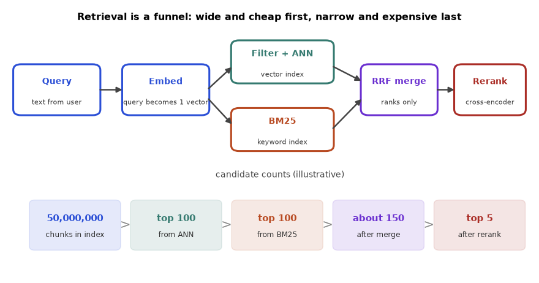
How to read it: follow the arrows left to right. The query becomes one vector. Two cheap searches run side by side (the vector index with the filter, and the keyword index). Their candidate lists are merged by rank, and only the merged top candidates meet the expensive reranker. The numbers in the boxes underneath show how the pile shrinks; each section below zooms into one box. The counts are illustrative; Section 6.8 computes real ones.
How to study this chapter. Run every code block yourself and change one number at a time (nprobe, k, the filter) to watch what moves. Before each worked problem, cover the steps table and try it. Sections 6.1 to 6.3 are the foundation you already had. Sections 6.4 to 6.10 deepen each piece with hand calculations and measured experiments. Section 6.11 is the playbook that ties everything into a method for any problem. Sections 6.12 to 6.14 are expert depth, a mixed drill and a self-test.
How it works. Store one vector per chunk, plus its metadata. For a query: embed it, compute the similarity with every stored vector (a matrix multiplication, as in Chapter 2), optionally keep only rows whose metadata matches the filter, sort, return the top k. Here we use TF-IDF vectors from Chapter 1 as a stand-in for an embedding model, because we have no model to download. The code, the filter and the scoring are identical when you use real embeddings.
Predict, run, explain. Version 1 uses a plain tokenizer. The query is "how long do refunds take". The doc says "Refund requests are processed within 7 business days". Do you expect a match?
import numpy as np
from sklearn.feature_extraction.text import TfidfVectorizer
docs=[("d1","Refund requests are processed within 7 business days.","billing"),
("d2","To reset your password click Forgot Password on the login page.","account"),
("d3","Invoices are emailed on the first day of every month.","billing"),
("d4","Two factor authentication can be enabled in security settings.","account"),
("d5","Premium plan includes 24x7 phone support.","plans"),
("d6","Cancel your subscription any time from the billing page.","billing")]
tf=TfidfVectorizer(stop_words="english",sublinear_tf=True)
M=tf.fit_transform([d[1] for d in docs]).toarray()
M/=np.linalg.norm(M,axis=1,keepdims=True)
def retrieve(q,k=3,meta=None):
v=tf.transform([q]).toarray()[0]; n=np.linalg.norm(v)
v=v/n if n else v
s=M@v
order=[i for i in np.argsort(-s) if meta is None or docs[i][2]==meta]
return [(docs[i][0],round(float(s[i]),3)) for i in order[:k]]
print(retrieve("how long do refunds take"))
print(retrieve("how do I reset my password"))
print(retrieve("billing page", meta="billing"))
print(retrieve("billing page", meta="plans"))[('d1', 0.0), ('d2', 0.0), ('d3', 0.0)]
[('d2', 0.694), ('d1', 0.0), ('d3', 0.0)]
[('d6', 0.598), ('d1', 0.0), ('d3', 0.0)]
[('d5', 0.0)]Explain line by line. M is a matrix with one unit-length row per document, so M @ v gives all cosines in one step. The first query scored 0.0 for the right document: the query word refunds is not the document word refund, and TF-IDF treats them as different words. This is exactly the vocabulary-mismatch problem that real embeddings are meant to solve, and it shows why you test retrieval before you trust it. The password query worked since the words overlap. The third call shows the filter: only billing documents are considered, and d6 wins. The fourth shows that a filter can remove all relevant documents: d5 is returned with score 0, which is a "result" in name only. In production, apply a minimum score or return "no results".
Now we add a crude stemmer (cut a final s from words longer than 3 letters) to the tokenizer, to see the fix. This is the complete code, so you can run it:
import re
import numpy as np
from sklearn.feature_extraction.text import TfidfVectorizer
docs=[("d1","Refund requests are processed within 7 business days.","billing"),
("d2","To reset your password click Forgot Password on the login page.","account"),
("d3","Invoices are emailed on the first day of every month.","billing"),
("d4","Two factor authentication can be enabled in security settings.","account"),
("d5","Premium plan includes 24x7 phone support.","plans"),
("d6","Cancel your subscription any time from the billing page.","billing")]
def tok(text):
words=re.findall(r"[a-z0-9]+",text.lower())
return [w[:-1] if len(w)>3 and w.endswith("s") else w for w in words]
tf=TfidfVectorizer(tokenizer=tok,token_pattern=None,stop_words=None,sublinear_tf=True)
M=tf.fit_transform([d[1] for d in docs]).toarray()
M/=np.linalg.norm(M,axis=1,keepdims=True)
def retrieve(q,k=3,meta=None):
v=tf.transform([q]).toarray()[0]; n=np.linalg.norm(v)
v=v/n if n else v
s=M@v
order=[i for i in np.argsort(-s) if meta is None or docs[i][2]==meta]
return [(docs[i][0],round(float(s[i]),3)) for i in order[:k]]
print(retrieve("how long do refunds take"))
print(retrieve("how do I reset my password"))
print(retrieve("billing page", meta="billing"))
print(retrieve("billing page", meta="plans"))[('d1', 0.369), ('d2', 0.0), ('d3', 0.0)]
[('d2', 0.592), ('d1', 0.0), ('d3', 0.0)]
[('d6', 0.462), ('d1', 0.0), ('d3', 0.0)]
[('d5', 0.0)]Line by line: (1) tok lowercases the text, splits it into letters-and-digits words with a regular expression, and removes a trailing s, so refunds becomes refund and days becomes day. (2) TfidfVectorizer(tokenizer=tok, token_pattern=None) tells scikit-learn to use our function instead of its own splitting; token_pattern=None silences the warning that both were given. (3) M is the document matrix, each row divided by its length so that its length is 1. (4) retrieve is unchanged from before. With the stemmer, d1 now scores 0.369 for the refund query and is first, and the other scores changed slightly because the vocabulary changed. The last line is the same as before: a filter that excludes everything relevant still returns something with score 0.
Problem 6.1.1 The password query scored 0.694 for d2 in the first run. Which words overlapped, and why is the score below 1?
| Step 1 | Query words after stop-word removal: reset, password (how, do, i are removed). |
|---|---|
| Step 2 | d2 contains reset, password (twice, in "your password" and "Forgot Password"), click, forgot, login, page. Overlap is reset and password. |
| Step 3 | The d2 vector has more words than the query, so after length normalisation its share along the two shared words is below 1. |
| Answer | Two words overlap; the score is below 1 because d2 also has many words the query lacks. |
| Check | A document that is exactly "reset password" would score 1.0 for this query. |
Problem 6.1.2 A metadata filter on department = "billing" leaves 3 of 6 documents. How many cosine computations does the filtered search need, compared with unfiltered?
| Compute | In our code we computed all 6 and filtered after, but a database that filters first computes only 3. Savings = (6 − 3)/6 = 50%. |
|---|---|
| Answer | 3 instead of 6, half the work (databases may filter before or after the vector search; this changes recall and speed, see Section 6.2). |
| Check | If the filter keeps 1% of 10 million vectors, a pre-filter needs only 100,000 comparisons, which is why filters matter at scale. |
Problem 6.1.3 Eight test questions are asked of the six-document help centre. Four have an answer in the documents, four do not. Using the stemmer retriever, find a score threshold below which the system should say "I could not find this", and describe the trade-off.
import re
import numpy as np
from sklearn.feature_extraction.text import TfidfVectorizer
docs=["Refund requests are processed within 7 business days.",
"To reset your password click Forgot Password on the login page.",
"Invoices are emailed on the first day of every month.",
"Two factor authentication can be enabled in security settings.",
"Premium plan includes 24x7 phone support.",
"Cancel your subscription any time from the billing page."]
def tok(t):
return [w[:-1] if len(w)>3 and w.endswith("s") else w for w in re.findall(r"[a-z0-9]+",t.lower())]
tf=TfidfVectorizer(tokenizer=tok,token_pattern=None,sublinear_tf=True)
M=tf.fit_transform(docs).toarray(); M/=np.linalg.norm(M,axis=1,keepdims=True)
queries=[("how long do refunds take",True),("forgot my password",True),("when are invoices sent",True),
("does the premium plan have phone support",True),
("what is the weather in Pune",False),("can I pay with bitcoin",False),
("who is the CEO of the company",False),("how do I export my data",False)]
rows=[]
for q,ans in queries:
v=tf.transform([q]).toarray()[0]; n=np.linalg.norm(v); v=v/n if n else v
s=M@v; rows.append((q,ans,float(s.max()),int(s.argmax())))
print(f"{s.max():.3f} top=d{s.argmax()+1} answerable={ans!s:5} {q}")
for th in [0.0,0.1,0.2,0.3,0.4]:
answered=[r for r in rows if r[2]>th]
good=sum(1 for r in answered if r[1]); bad=len(answered)-good
missed=sum(1 for r in rows if r[1] and r[2]<=th)
print(f"threshold {th:.1f}: answered {len(answered)}, of which unanswerable (hallucination risk)={bad}, answerable questions refused={missed}")0.369 top=d1 answerable=True how long do refunds take
0.592 top=d2 answerable=True forgot my password
0.444 top=d3 answerable=True when are invoices sent
0.772 top=d5 answerable=True does the premium plan have phone support
0.274 top=d4 answerable=False what is the weather in Pune
0.333 top=d4 answerable=False can I pay with bitcoin
0.403 top=d3 answerable=False who is the CEO of the company
0.000 top=d1 answerable=False how do I export my data
threshold 0.0: answered 7, of which unanswerable (hallucination risk)=3, answerable questions refused=0
threshold 0.1: answered 7, of which unanswerable (hallucination risk)=3, answerable questions refused=0
threshold 0.2: answered 7, of which unanswerable (hallucination risk)=3, answerable questions refused=0
threshold 0.3: answered 6, of which unanswerable (hallucination risk)=2, answerable questions refused=0
threshold 0.4: answered 4, of which unanswerable (hallucination risk)=1, answerable questions refused=1| Idea | The best score of each question is its only evidence. A threshold answers when the best score is above it and refuses otherwise. Two errors compete: answering a question that has no answer (the generator will invent one), and refusing a question that does have an answer. |
|---|---|
| Step 1 | Read the scores of the answerable questions: 0.369, 0.592, 0.444, 0.772. The lowest is 0.369 (the refund question). |
| Step 2 | Read the scores of the unanswerable questions: 0.274, 0.333, 0.403, 0.000. Three of four are above 0.2 because common words such as in, the, of still overlap with some document (no stop-word list was used here). |
| Step 3 | Sweep the threshold. At 0.3: 6 answered, 2 of them unanswerable, 0 answerable refused. At 0.4: 4 answered, 1 unanswerable still answered (the CEO question at 0.403), and 1 answerable question refused (refund, 0.369). |
| Answer | No threshold separates the two groups on this data. The scores overlap (0.369 is below 0.403). Choose the threshold from the cost of each error, and expect to need a better signal (a reranker score, or stop-word removal) to separate the groups cleanly. |
| Check | Count them: 8 questions, so at every threshold answered plus refused equals 8. At 0.4, answered = 4, refused = 4 (three unanswerable and the refund question). It adds up. |
| Why it matters | Dense embedding models give unrelated text a score floor of 0.2 to 0.4, so a fixed threshold copied from a blog post for another model is wrong. Calibrate it on your own labelled questions (Section 6.9). |
Permissions belong in the filter. If user A may only read documents from the "legal" team, the filter must be part of the search itself, not applied after the model has read the chunks. This is permissions-aware retrieval (Chapter 7 and 9).
Applications
Check yourself
Answer: refunds and refund were different tokens for TF-IDF.
Answer: So that unauthorised chunks are never retrieved or shown to the model.
M @ v compute when rows are unit vectors?Answer: The cosine similarity of every document with the query.
The index types.
| Index | Idea | Memory | Speed | Accuracy |
|---|---|---|---|---|
| Flat | Compare with all vectors | Full vectors | Slow at scale | Exact (100% recall) |
| IVF | Cluster vectors with k-means into lists; search only the nearest nprobe lists | Full + small centroid table | Fast | Approximate; higher nprobe means higher recall |
| HNSW | Multi-layer graph; greedy walk from coarse upper layer to dense bottom layer | Full vectors + graph links (more memory) | Very fast | Approximate; controlled by M, efConstruction, efSearch |
| PQ (product quantization) | Split each vector into pieces and replace each piece with a short code from a codebook | Much smaller | Fast, slightly less accurate | Lossy compression |
HNSW stands for Hierarchical Navigable Small World. In HNSW the search effort grows roughly with the logarithm of the number of vectors, which is why it is the common default in many vector databases. Its knobs: M (links per node: more means better recall and more memory), efConstruction (effort when building the graph), efSearch (effort per query: more means higher recall and slower). In IVF the knobs are the number of lists and nprobe.
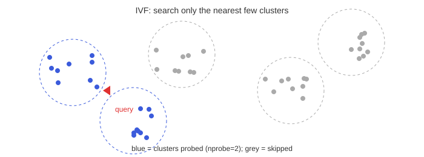
How to read the picture: each dotted circle is a cluster (a "list") of vectors. The red marker is the query. We search only the blue clusters nearest to it (nprobe = 2) and skip the grey ones. The true nearest neighbour might sit in a skipped cluster near a boundary; that is the "approximate" in ANN.
A real experiment. We build 50,000 synthetic vectors of 64 dimensions that form 200 natural groups, run exact search as the truth, and then an IVF index with 100 lists, trying nprobe = 1, 3 and 10, measuring recall@10 against the exact answer. Predict first: will recall at nprobe = 1 be above or below 50%?
import numpy as np, time
rng=np.random.default_rng(0)
N,d=50000,64
centers=rng.normal(size=(200,d))*3
X=(centers[rng.integers(0,200,N)]+rng.normal(size=(N,d))).astype("float32")
X/=np.linalg.norm(X,axis=1,keepdims=True)
Q=X[rng.choice(N,100,replace=False)]+0.1*rng.normal(size=(100,d)).astype("float32")
Q/=np.linalg.norm(Q,axis=1,keepdims=True)
t=time.perf_counter(); S=Q@X.T; truth=np.argsort(-S,axis=1)[:,:10]; tf=time.perf_counter()-t
print(f"flat exact: {tf*1000/100:.2f} ms/query (batched)")
K=100
C=X[rng.choice(N,K,replace=False)].copy()
for _ in range(8): # a few k-means rounds
a=np.argmax(X@C.T,axis=1)
for j in range(K):
m=X[a==j]
if len(m): c=m.mean(0); C[j]=c/np.linalg.norm(c)
a=np.argmax(X@C.T,axis=1)
lists=[np.nonzero(a==j)[0] for j in range(K)]
for nprobe in [1,3,10]:
t=time.perf_counter(); hit=0; scanned=0
for qi,q in enumerate(Q):
cs=np.argsort(-(C@q))[:nprobe]
cand=np.concatenate([lists[j] for j in cs]); scanned+=len(cand)
top=cand[np.argsort(-(X[cand]@q))[:10]]
hit+=len(set(top)&set(truth[qi]))
el=time.perf_counter()-t
print(f"nprobe={nprobe:2d} recall@10={hit/1000:.3f} scanned={scanned/100/N:.1%} of data, {el*10:.2f} ms/query")flat exact: 3.17 ms/query (batched)
nprobe= 1 recall@10=0.970 scanned=1.2% of data, 0.14 ms/query
nprobe= 3 recall@10=0.990 scanned=3.3% of data, 0.21 ms/query
nprobe=10 recall@10=1.000 scanned=10.3% of data, 0.58 ms/queryExplain. truth holds the exact top 10 for each of the 100 queries. After k-means, each vector belongs to its nearest centroid's list. For a query we find the nprobe nearest centroids, gather only their vectors as candidates, and rank those. Recall@10 is (number of true top-10 found) / (100 queries × 10). With nprobe = 1 we scanned only 1.2% of the data and still found 97% of the true neighbours. Raising nprobe to 10 found all of them (recall 1.000) while scanning 10% of the data, still about 5 times faster than the batched flat search. Timings depend on your machine, and the data are artificially clustered, which flatters IVF; real text embeddings are less cleanly clustered, so you typically need more probes. The lesson is the shape of the trade-off: more work buys more recall with diminishing returns.
Problem 6.2.1 From the table, how much work did nprobe = 3 do compared with scanning everything, and what did it cost in recall?
| Formula | work fraction = vectors scanned / total vectors |
|---|---|
| Plug in | 3.3% scanned of N = 50,000 |
| Compute | 0.033 × 50,000 = 1,650 vectors per query (plus 100 centroid comparisons). Recall = 0.990, so the miss rate is 1 − 0.990 = 0.010. |
| Answer | It compared the query with about 1,650 vectors plus 100 centroids instead of 50,000, and lost 1% of the true top-10 results. |
| Check | 1,750 / 50,000 = 3.5%, matching "3.3% plus centroids". |
| Why it matters | Whether a 1% miss is acceptable depends on the product: for a help-desk search, usually yes; for finding every similar fraud case, maybe not. |
Problem 6.2.2 Product quantization: a 768-dimension float32 vector takes 3,072 bytes. PQ splits it into 96 pieces and stores one 1-byte code per piece. How big is the compressed vector, and how much memory is saved for 10 million vectors?
| Formula | bytes = dimension × 4 (float32); compressed = pieces × 1 |
|---|---|
| Compute | 768 × 4 = 3,072 bytes; compressed = 96 bytes; ratio = 3,072 / 96 = 32. For 10 million vectors: 30.72 GB versus 0.96 GB. |
| Answer | PQ shrinks each vector 32 times; 10 million vectors go from about 30.7 GB to about 0.96 GB. |
| Check | 10,000,000 × 3,072 = 30,720,000,000 bytes; 10,000,000 × 96 = 960,000,000 bytes. |
| Why it matters | It is the difference between needing a big RAM machine and a laptop-size index, at some accuracy cost, which is why PQ is often followed by a rescoring step with full vectors. |
Where this goes next. Section 6.5 rebuilds these indexes with more realistic data, shows a hand-traced HNSW search, and measures PQ with rescoring. Section 6.6 measures what filters do to each index.
Filters meet ANN. Pre-filtering (filter first, then search the subset) is accurate but can be slow for small subsets in graph indexes. Post-filtering (search, then drop non-matching) is fast but can return fewer than k results if most hits are filtered out. Good vector databases implement filtered search carefully; read how yours does it.
The vector store landscape (names, not rankings; capabilities change, so read current docs):
| Option | What it is | Typical use |
|---|---|---|
| FAISS | A library (not a server) of ANN indexes from Meta | Research, embedded in your app |
| Chroma | Simple embedded vector store | Prototypes, local apps |
| Qdrant, Weaviate, Milvus | Dedicated vector databases (open source, also hosted) | Production search with filters |
| pgvector | Vector search inside PostgreSQL | When you already use Postgres; one system for data and vectors |
| Pinecone | Hosted managed vector database | When you want no operations work |
| Elasticsearch / OpenSearch | Search engines with BM25 and vector support | Hybrid search, existing search clusters |
Picking one: start with what you have (Postgres with pgvector, or your search engine), measure recall and latency on your data, and move to a dedicated store only if you hit limits.
Applications
Check yourself
nprobe do?Answer: Searches more clusters, raising recall and latency.
Answer: Flat.
Answer: 1,000,000 × 384 × 4 = 1.536 GB.
Hybrid search. Run BM25 (Chapter 1) and vector search, then merge. A simple, robust merge is Reciprocal Rank Fusion (RRF), which uses only ranks (not scores, which live on different scales):
RRF score(d) = Σ over rankings of 1 / (k + rank of d) (k is usually 60)def rrf(rankings,k=60):
s={}
for r in rankings:
for pos,d in enumerate(r,1): s[d]=s.get(d,0)+1/(k+pos)
return sorted(s.items(),key=lambda x:-x[1])
bm25=["d3","d1","d7","d2"]; vec=["d1","d5","d3","d9"]
for d,sc in rrf([bm25,vec]): print(d,round(sc,5))d1 0.03252
d3 0.03227
d5 0.01613
d7 0.01587
d2 0.01562
d9 0.01562Problem 6.3.1 Verify the scores of d1 and d3 by hand.
| Formula | RRF = 1/(60 + rank in list 1) + 1/(60 + rank in list 2) |
|---|---|
| Plug in | d1 is rank 2 in BM25 and rank 1 in vectors. d3 is rank 1 in BM25 and rank 3 in vectors. |
| Compute | d1: 1/62 + 1/61 = 0.016129 + 0.016393 = 0.032522. d3: 1/61 + 1/63 = 0.016393 + 0.015873 = 0.032266. |
| Answer | d1 (0.03252) beats d3 (0.03227): it ranks high in both lists. |
| Check | The code printed 0.03252 and 0.03227. A document in one list only (d5, rank 2 in vectors) gets 1/62 = 0.01613, below any document that appears in both high up. |
| Why it matters | RRF rewards agreement between independent retrievers and needs no score calibration. |
Reranking. The first stage (bi-encoder: the query and the document are embedded separately, which allows precomputing document vectors) is fast but coarse. A cross-encoder reads the query and one document together in one pass and outputs a relevance score. It is more accurate and much slower, so it is applied only to the top 20 to 100 candidates. Hosted rerank APIs (for example Cohere Rerank) and open cross-encoder models exist; the pattern is: retrieve 50, rerank, keep 5.
Problem 6.3.2 A cross-encoder takes 20 ms per (query, chunk) pair on your hardware. How long does reranking 50 candidates take sequentially, and would you rerank all 1 million chunks?
| Compute | 50 × 20 ms = 1,000 ms = 1 s sequentially (batching and a GPU reduce this a lot). Whole index: 1,000,000 × 20 ms = 20,000 s = 5.6 hours per query. |
|---|---|
| Answer | Reranking 50 candidates costs about 1 s sequentially, which is acceptable only with batching; reranking everything is impossible. |
| Check | 20,000 s / 3,600 = 5.56 hours. |
| Why it matters | This is why retrieval is a funnel: cheap and wide first, expensive and narrow later. |
1 million chunks --(BM25 + vector, ANN)--> top 50 --(cross-encoder rerank)--> top 5 --> promptApplications
Check yourself
Answer: The scores have different scales; ranks can be compared directly.
Answer: It must read each pair together, which is too slow for millions.
Answer: A model that embeds query and document separately so document vectors can be precomputed.
The three scores. For vectors a and b with d numbers each:
Dot product is large when vectors point the same way and are long. Cosine removes length. L2 distance is smaller for closer points (so you rank by smallest, or by minus distance). When |a| = |b| = 1, expanding the square gives the identity that links them all:
Worked example, smallest case. Three vectors in 2 dimensions: a = (3, 4), b = (4, 3), c = (6, 8). Notice c = 2a, so c points in exactly the same direction as a, just twice as long.
import numpy as np
a=np.array([3.0,4.0]); b=np.array([4.0,3.0]); c=np.array([6.0,8.0])
def cos(x,y): return x@y/(np.linalg.norm(x)*np.linalg.norm(y))
for name,y in [("b",b),("c",c)]:
print(f"a vs {name}: dot={a@y:.0f} cosine={cos(a,y):.3f} L2={np.linalg.norm(a-y):.3f}")
# after scaling every vector to length 1
u=lambda v: v/np.linalg.norm(v)
ua,ub,uc=u(a),u(b),u(c)
print("unit a.b =",round(ua@ub,3)," L2^2 =",round(np.sum((ua-ub)**2),3)," 2-2*cos =",round(2-2*(ua@ub),3))
print("unit a.c =",round(ua@uc,3)," L2^2 =",round(np.sum((ua-uc)**2),3))a vs b: dot=24 cosine=0.960 L2=1.414
a vs c: dot=50 cosine=1.000 L2=5.000
unit a.b = 0.96 L2^2 = 0.08 2-2*cos = 0.08
unit a.c = 1.0 L2^2 = 0.0Line by line: (1) a, b, c are NumPy arrays. (2) cos divides the dot product by the product of the lengths. (3) The loop prints dot, cosine and L2 of a against b and against c. (4) u rescales a vector to length 1. (5) The last two lines check the identity L22 = 2 − 2·cosine on the unit vectors. Read the output: by dot product, c (50) beats b (24) for the query a simply because it is longer. By cosine, c is a perfect 1.000 and b is 0.960. By L2, b is closer (1.414) than c (5.000), the opposite of cosine. On raw vectors the scores disagree: dot product and cosine pick c, L2 picks b. After normalising, L22 = 0.08 = 2 − 2×0.96, and the ranking is the same for all three.
Problem 6.4.1 Query q = (1, 2). Chunks: x = (2, 4), y = (3, 1), z = (−1, −2). Compute dot, cosine and L2 for each and give the ranking under each score.
| Lengths | |q| = √(1+4) = √5 = 2.236. |x| = √(4+16) = √20 = 4.472. |y| = √(9+1) = √10 = 3.162. |z| = √(1+4) = √5 = 2.236. |
|---|---|
| Dot | q·x = 2 + 8 = 10. q·y = 3 + 2 = 5. q·z = −1 − 4 = −5. |
| Cosine | x: 10 / (2.236 × 4.472) = 10 / 10 = 1.000. y: 5 / (2.236 × 3.162) = 5 / 7.071 = 0.707. z: −5 / (2.236 × 2.236) = −5 / 5 = −1.000. |
| L2 | q − x = (−1, −2), distance √5 = 2.236. q − y = (−2, 1), distance √5 = 2.236. q − z = (2, 4), distance √20 = 4.472. |
| Answer | Dot: x, y, z. Cosine: x, y, z. L2: x and y tie at 2.236, then z. Here x is the same direction as q (cosine 1) yet L2 does not separate it from y, because x is twice as long. |
| Check | z = −q, so cosine must be exactly −1; and x = 2q, so cosine must be exactly 1. Both hold. |
| Why it matters | If your embeddings are not unit length, "dot product", "cosine" and "L2" are three different search engines. Check the model card, and normalise when in doubt. |
Problem 6.4.2 Two unit vectors have cosine 0.96. What is the straight-line distance between them? And if a database reports L2 distance 0.5 between unit vectors, what is the cosine?
| Formula | L22 = 2 − 2·cos, so cos = 1 − L22/2. |
|---|---|
| Part 1 | L22 = 2 − 2 × 0.96 = 0.08, so L2 = √0.08 = 0.2828. |
| Part 2 | cos = 1 − 0.52/2 = 1 − 0.125 = 0.875. |
| Answer | 0.2828 and 0.875. |
| Check | Cosine 1 should give distance 0: √(2 − 2) = 0. Cosine 0 (perpendicular) should give √2 = 1.414: yes, the diagonal of a unit square. |
| Why it matters | Some databases return "distance", others "similarity". Converting correctly lets you apply the same threshold or compare engines. Many returned "score" values are 1 − cosine or 2 − 2·cosine in disguise. |
Do the three scores really rank the same after normalising? Test it on 1,000 vectors of very different lengths, once raw and once normalised:
import numpy as np
rng=np.random.default_rng(1)
X=rng.normal(size=(1000,16))*rng.uniform(0.5,3,size=(1000,1)) # vectors of very different lengths
q=rng.normal(size=16)
def top5(scores): return np.argsort(-scores)[:5].tolist()
cos=(X@q)/(np.linalg.norm(X,axis=1)*np.linalg.norm(q))
dot=X@q
l2=-np.linalg.norm(X-q,axis=1)
print("raw vectors")
print(" cosine top5:",top5(cos)); print(" dot top5:",top5(dot)); print(" -L2 top5:",top5(l2))
U=X/np.linalg.norm(X,axis=1,keepdims=True); uq=q/np.linalg.norm(q)
print("after normalising")
print(" cosine top5:",top5(U@uq)); print(" dot top5:",top5(U@uq)); print(" -L2 top5:",top5(-np.linalg.norm(U-uq,axis=1)))raw vectors
cosine top5: [180, 120, 345, 483, 186]
dot top5: [483, 53, 689, 487, 649]
-L2 top5: [345, 685, 292, 94, 853]
after normalising
cosine top5: [180, 120, 345, 483, 186]
dot top5: [180, 120, 345, 483, 186]
-L2 top5: [180, 120, 345, 483, 186]Line by line: (1) X has 1,000 random vectors, each multiplied by a random length between 0.5 and 3. (2) cos, dot and l2 are the three scores for one random query. (3) top5 returns the indices of the five best (-scores because argsort sorts ascending). (4) Raw: the three lists are completely different, because dot product rewards length and L2 punishes it. (5) Normalised: U and uq are unit length, and the three lists are identical, [180, 120, 345, 483, 186]. This is the proof by experiment of the identity above.
Exact (flat) search scores the query against every chunk: N × d multiply-adds, and it must read all N × d × 4 bytes from memory for float32. Memory reading is usually the real limit, so estimate time as bytes divided by memory bandwidth (we use 50 GB/s, a round number for one server; measure yours):
# cost of exact search for ONE query: N*d multiply-adds, and N*d*4 bytes that must be read from memory
rows=[(10_000,384),(1_000_000,768),(50_000_000,768),(1_000_000_000,1024)]
print(f"{'N':>14} {'dim':>5} {'GB float32':>11} {'GFLOP':>9} {'s @50 GB/s':>11}")
for N,d in rows:
gb=N*d*4/1e9; gflop=2*N*d/1e9
print(f"{N:>14,} {d:>5} {gb:>11.2f} {gflop:>9.2f} {gb/50:>11.3f}") N dim GB float32 GFLOP s @50 GB/s
10,000 384 0.02 0.01 0.000
1,000,000 768 3.07 1.54 0.061
50,000,000 768 153.60 76.80 3.072
1,000,000,000 1024 4096.00 2048.00 81.920Line by line: (1) rows holds four index sizes. (2) For each, gb is N × d × 4 bytes in GB (1 GB = 109 bytes), gflop is 2 × N × d operations (one multiply and one add per number) in billions. (3) The last column divides the gigabytes by 50 GB/s. For 1 million chunks of 768 dimensions the scan is 3.07 GB and takes about 0.06 seconds per query: fine for one user, too slow for hundreds per second. For 50 million chunks it is 3 seconds per query and 153.6 GB of RAM.
Problem 6.4.3 A product has 50 million chunks, 768 dimensions, float32, and must serve 20 queries per second. Can brute force do it on one machine with 50 GB/s memory bandwidth? What does an index that scans 2% of the data change?
| Formula | bytes per query = N × d × 4. Time per query = bytes / bandwidth. Needed time per second = QPS × time per query. |
|---|---|
| Compute | 50,000,000 × 768 × 4 = 153.6 GB. Time = 153.6 / 50 = 3.07 s per query. At 20 QPS: 20 × 3.07 = 61.4 seconds of memory reading for every second that passes. |
| Answer | No: one machine does 1 query every 3 seconds, so you would need at least 62 such machines (and the data would not even fit in one machine's RAM). With an index that scans 2%: 0.02 × 153.6 = 3.07 GB per query, 0.061 s, so 20 QPS needs 1.23 machine-seconds per second, which one or two machines can do (before counting RAM for the 153.6 GB itself; see Section 6.10). |
| Check | 3.07 s / 50 = 0.0614 s; 20 × 0.0614 = 1.23. The ratio 61.4 / 1.23 = 50, which equals 1 / 0.02. Consistent. |
| Why it matters | This division, bytes touched per query over bandwidth, is the first thing an interviewer expects when you argue for an index. |
In 2 dimensions "nearest" is obvious. In 1,000 dimensions the distances from a point to random others bunch together. We measure the ratio of the farthest to the nearest distance among 5,000 random points:
import numpy as np
rng=np.random.default_rng(0)
print("dim nearest farthest farthest/nearest")
for d in [2,10,100,1000]:
X=rng.normal(size=(5000,d)); q=rng.normal(size=d)
dist=np.linalg.norm(X-q,axis=1)
print(f"{d:>4} {dist.min():8.2f} {dist.max():9.2f} {dist.max()/dist.min():12.2f}")dim nearest farthest farthest/nearest
2 0.03 4.90 146.87
10 1.46 7.39 5.05
100 10.25 16.22 1.58
1000 42.18 48.31 1.15The ratio falls from 147 (2 dimensions) to 1.15 (1,000 dimensions): the nearest point is only 15% closer than the farthest. When distances barely differ, any shortcut that skips candidates risks skipping the true neighbour. Real embeddings are not random: text lives on a much lower-dimensional surface inside the 768 or 1,536 numbers, so structure exists and indexes work. But this is why ANN recall on real data is harder to get than on clean synthetic clusters (you will see it in Section 6.5), and why embedding quality matters more than index tuning.
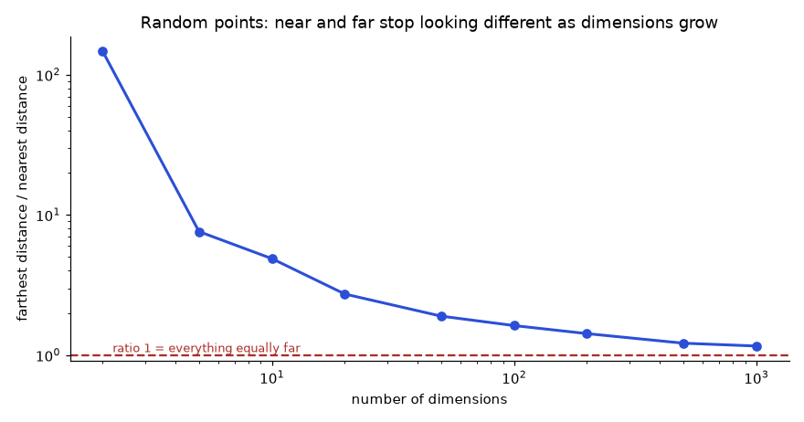
How to read it: the horizontal axis is the number of dimensions (log scale), the vertical axis is farthest divided by nearest distance (log scale). The dashed line at 1 would mean every point is equally far. The curve is heading to it.
Check yourself
Answer: The cosine is identical; the dot product of the long one is 10 times larger.
Answer: cos = 1 − 12/2 = 0.5.
Answer: Scanning vectors is limited by how fast memory can deliver the bytes, not by the arithmetic.
Build: run k-means on the vectors to get nlist centroids; assign each vector to its nearest centroid, which creates nlist lists. Search: compare the query with the nlist centroids (cheap), take the nprobe closest, scan all vectors in those lists, return the best k. Work per query is about nlist + nprobe × (N / nlist) distance computations when lists are balanced.
Problem 6.5.1 N = 1,000,000 vectors. You choose nlist = 1,000 (about √N is a common starting point) and nprobe = 20. How many distance computations per query, and what share of brute force is that?
| Formula | work = nlist (centroid comparisons) + nprobe × N / nlist (list scans). |
|---|---|
| Compute | List size = 1,000,000 / 1,000 = 1,000. Scans = 20 × 1,000 = 20,000. Total = 1,000 + 20,000 = 21,000. |
| Answer | 21,000 distance computations, which is 21,000 / 1,000,000 = 2.1% of brute force (about 48 times fewer). |
| Check | Doubling nprobe to 40 gives 1,000 + 40,000 = 41,000 (4.1%): work grows almost linearly with nprobe. Setting nprobe = nlist = 1,000 scans everything (1,001,000 computations, slightly more than brute force) and equals exact search. |
| Why it matters | It shows both knobs: more lists make each list smaller but the centroid table longer. The best nlist balances the two terms (the minimum of nlist + nprobe × N / nlist is near √(nprobe × N)). |
Now measure it. We build two datasets of 30,000 vectors in 32 dimensions: one with well separated groups, one with overlapping groups (closer to real text). For each we build 100 lists with k-means and measure recall@10 against exact search while raising nprobe.
import os
os.environ["OMP_NUM_THREADS"]="1" # one thread, set before importing numpy: k-means then gives the same answer on every run
import numpy as np
from sklearn.cluster import KMeans
def make(spread, N=30000, d=32, groups=60, seed=0):
rng=np.random.default_rng(seed)
centers=rng.normal(size=(groups,d))*spread
X=centers[rng.integers(0,groups,N)]+rng.normal(size=(N,d))
X=(X/np.linalg.norm(X,axis=1,keepdims=True)).astype("float32")
Q=X[rng.choice(N,200,replace=False)]+0.15*rng.normal(size=(200,d)).astype("float32")
return X,(Q/np.linalg.norm(Q,axis=1,keepdims=True)).astype("float32")
def run(name,spread,nlist=100,k=10):
X,Q=make(spread)
truth=np.argsort(-(Q@X.T),axis=1)[:,:k] # exact answers
km=KMeans(nlist,n_init=1,random_state=0).fit(X) # build the lists
C=km.cluster_centers_.astype("float32"); assign=km.labels_
lists=[np.nonzero(assign==j)[0] for j in range(nlist)]
print(name)
for nprobe in [1,2,5,10,20,40]:
hit=0; scanned=0
for qi,q in enumerate(Q):
near=np.argsort(-(C@q))[:nprobe]
cand=np.concatenate([lists[j] for j in near]); scanned+=len(cand)
top=cand[np.argsort(-(X[cand]@q))[:k]]
hit+=len(set(top.tolist())&set(truth[qi].tolist()))
print(f" nprobe={nprobe:>2} recall@10={hit/(len(Q)*k):.3f} scanned={scanned/len(Q)/len(X):.1%}")
run("well separated groups",3.0)
run("overlapping groups (more like real text)",0.8)well separated groups
nprobe= 1 recall@10=0.812 scanned=1.2%
nprobe= 2 recall@10=0.975 scanned=2.1%
nprobe= 5 recall@10=1.000 scanned=5.2%
nprobe=10 recall@10=1.000 scanned=10.1%
nprobe=20 recall@10=1.000 scanned=20.0%
nprobe=40 recall@10=1.000 scanned=39.7%
overlapping groups (more like real text)
nprobe= 1 recall@10=0.502 scanned=1.1%
nprobe= 2 recall@10=0.680 scanned=2.1%
nprobe= 5 recall@10=0.835 scanned=5.2%
nprobe=10 recall@10=0.916 scanned=10.1%
nprobe=20 recall@10=0.972 scanned=20.2%
nprobe=40 recall@10=0.997 scanned=40.2%Line by line: (1) make creates N vectors as "group centre + noise", normalises them to unit length, and builds 200 queries by perturbing stored vectors, so every query has real neighbours. spread controls how far apart the group centres are: 3.0 means well separated, 0.8 means heavily overlapping. (2) truth is the exact top 10 for every query: the ground truth. (3) KMeans(nlist) clusters the vectors; labels_ says which list each vector belongs to. (4) For each nprobe the loop finds the nearest centroids, collects their vectors as candidates, ranks the candidates, and counts how many of the true top 10 were found. (5) scanned is the share of the data actually compared.
Read the output. On well separated data, 2 probes (2.1% of the data) already give recall 0.975 and 5 probes give 1.000. On overlapping data, 5 probes give only 0.835, 10 probes 0.916, and you need 20 probes (20% of the data) to cross 0.95. Same index, same code, about ten times more work for the same recall: the quality of the clustering depends on how much structure the data has. The tutorial rule "nprobe = 10 is plenty" is a property of the demo data, not of IVF.
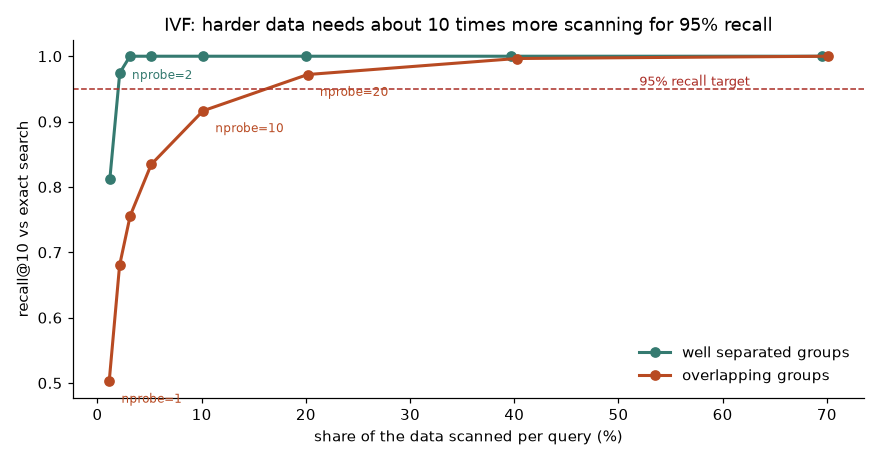
How to read it: each point is one value of nprobe. Moving right means scanning more of the data (slower); moving up means finding more true neighbours. You want the leftmost point above the dashed 95% line. That point is your setting.
Problem 6.5.2 Using the overlapping-groups results, your product needs recall@10 of at least 0.95. Which nprobe do you choose, how much data does it scan, and what do you do if that is too slow?
| Read | nprobe 10: recall 0.916, scanned 10.1%. nprobe 20: recall 0.972, scanned 20.2%. nprobe 40: recall 0.997, scanned 40.2%. |
|---|---|
| Pick | The smallest nprobe with recall ≥ 0.95 among those measured is 20 (0.972). Values between 10 and 20 were not measured, so you could test 14 or 16 before settling. |
| Answer | nprobe = 20, scanning about 20% of the vectors. If that is too slow: (a) more lists with the same nprobe fraction does not help by itself; (b) switch to HNSW, which usually reaches the same recall with far fewer distance computations on hard data (next subsection); (c) add PQ with rescoring to make each scan cheaper; (d) accept a lower recall target if the product allows it. |
| Check | Recall must rise (never fall) as nprobe rises, and scanned share must be close to nprobe / nlist (20 / 100 = 20%). Both hold. |
| Why it matters | This is the standard tuning loop: fix a recall target, find the cheapest setting that meets it, on data that looks like yours. |
Think of a road map. Highways (upper layers) have few nodes and long links, so you cross the country quickly. Local roads (the bottom layer) contain every node and short links, so you finish precisely. Search: start at a fixed entry point in the top layer; repeatedly move to whichever linked node is closer to the query until no neighbour is closer; drop to the next layer and repeat from there; at the bottom layer use a beam: keep a candidate list of size efSearch and expand the best candidate until the candidates cannot improve the list. Build: insert vectors one by one, connect each to its M nearest already inserted vectors (and so on in lower layers), using efConstruction as the beam size while searching for those neighbours.
Trace it by hand first. Seven points on a plane with straight-line distance: A(0,0), B(2,1), C(4,1), D(6,2), E(7,5), F(5,6), G(8,3). Links: A-B, B-C, C-D, D-E, D-G, C-F, F-E, E-G. The query is q = (7,4), the entry point is A. The code prints every distance it computes.
import numpy as np
P={"A":(0,0),"B":(2,1),"C":(4,1),"D":(6,2),"E":(7,5),"F":(5,6),"G":(8,3)}
edges=[("A","B"),("B","C"),("C","D"),("D","E"),("D","G"),("C","F"),("F","E"),("E","G")]
nb={k:set() for k in P}
for u,v in edges: nb[u].add(v); nb[v].add(u)
def dist(a,q): return float(np.hypot(P[a][0]-q[0],P[a][1]-q[1]))
def greedy(q,start,graph):
cur=start; calls=1; path=[cur]; print(f" start {cur}: dist={dist(cur,q):.3f}")
while True:
best,bd=cur,dist(cur,q)
for v in sorted(graph[cur]):
calls+=1; dv=dist(v,q); print(f" at {cur}: look at {v}, dist={dv:.3f}")
if dv<bd: best,bd=v,dv
if best==cur: return cur,path,calls
cur=best; path.append(cur); print(f" move to {cur}")
q=(7,4)
print("query (7,4), full graph")
end,path,calls=greedy(q,"A",nb)
print("stopped at",end,"path",path,"distance computations",calls)
true=min(P,key=lambda a:dist(a,q)); print("true nearest:",true)
# remove the edge D-E and E-G, so the way to the goal is blocked by a "valley"
nb2={k:set(v) for k,v in nb.items()}
nb2["D"].discard("E"); nb2["E"].discard("D"); nb2["E"].discard("G"); nb2["G"].discard("E")
print("same query, graph without edges D-E and E-G")
end,path,calls=greedy(q,"A",nb2)
print("stopped at",end,"path",path,"-> true nearest is",true)
# beam search with ef=3 keeps several candidates alive, so it can leave the dead end
import heapq
def beam(q,start,graph,ef):
seen={start}; cand=[(dist(start,q),start)]; best=[(dist(start,q),start)]
while cand:
d,u=heapq.heappop(cand)
if len(best)>=ef and d>max(best)[0]: break
for v in sorted(graph[u]):
if v in seen: continue
seen.add(v); dv=dist(v,q)
if len(best)<ef or dv<max(best)[0]:
heapq.heappush(cand,(dv,v)); best.append((dv,v)); best=sorted(best)[:ef]
return [(v,round(d,3)) for d,v in sorted(best)]
for ef in (1,2,3):
print(f"beam search ef={ef} on the broken graph:",beam(q,"A",nb2,ef))query (7,4), full graph
start A: dist=8.062
at A: look at B, dist=5.831
move to B
at B: look at A, dist=8.062
at B: look at C, dist=4.243
move to C
at C: look at B, dist=5.831
at C: look at D, dist=2.236
at C: look at F, dist=2.828
move to D
at D: look at C, dist=4.243
at D: look at E, dist=1.000
at D: look at G, dist=1.414
move to E
at E: look at D, dist=2.236
at E: look at F, dist=2.828
at E: look at G, dist=1.414
stopped at E path ['A', 'B', 'C', 'D', 'E'] distance computations 13
true nearest: E
same query, graph without edges D-E and E-G
start A: dist=8.062
at A: look at B, dist=5.831
move to B
at B: look at A, dist=8.062
at B: look at C, dist=4.243
move to C
at C: look at B, dist=5.831
at C: look at D, dist=2.236
at C: look at F, dist=2.828
move to D
at D: look at C, dist=4.243
at D: look at G, dist=1.414
move to G
at G: look at D, dist=2.236
stopped at G path ['A', 'B', 'C', 'D', 'G'] -> true nearest is E
beam search ef=1 on the broken graph: [('G', 1.414)]
beam search ef=2 on the broken graph: [('G', 1.414), ('D', 2.236)]
beam search ef=3 on the broken graph: [('E', 1.0), ('G', 1.414), ('D', 2.236)]Line by line: (1) P stores coordinates; nb is the neighbour set of every node, built from the edge list (links work both ways). (2) greedy starts at start; at each step it computes the distance of every neighbour of the current node and moves to the best one if it beats the current node; it stops when no neighbour is better. (3) First run, full graph: the walk goes A, B, C, D, E and stops at E (distance 1.000), which is the true nearest point. It computed 13 distances instead of 7 (here the graph is tiny, so there is no saving; the saving appears at scale). (4) Second run: we delete the links D-E and E-G. Now greedy from D sees only G (1.414) and C, moves to G and stops there. G is a local optimum: all its neighbours are farther from the query, yet the true nearest point E (1.000) exists. This is the failure mode of pure greedy search. (5) beam keeps ef candidates alive. With ef = 1 it behaves like greedy and returns G. With ef = 2 it still returns G. With ef = 3 the candidate F (2.828, worse than D at 2.236) survives, is expanded after D and G fail to improve, reaches E through F, and the result is E, G, D. The beam size is what efSearch controls, and why raising it raises recall.
Problem 6.5.3 In the trace above, why does the beam (ef = 3) find E when greedy does not, and what does it cost?
| Setup | After the walk reaches C, its unexplored neighbours are D (2.236) and F (2.828). Greedy follows only the best, D. |
|---|---|
| Beam | With ef = 3 the candidate list holds up to 3 nodes, so F stays alive. After D and G are expanded without improvement, the next best candidate, F, is expanded: its neighbour E has distance 1.000, better than everything seen. |
| Cost | Every extra candidate that is expanded means its neighbours are measured too, so distance computations rise. On real graphs the cost grows roughly in proportion to ef. |
| Answer | The beam keeps alternatives alive, so a wrong early turn can be repaired; it costs more distance computations per query. |
| Check | With ef = 1 the beam behaves like greedy search and returns G again, and ef = 2 still returns G: the output above shows that ef = 3 is the smallest beam that repairs this graph. |
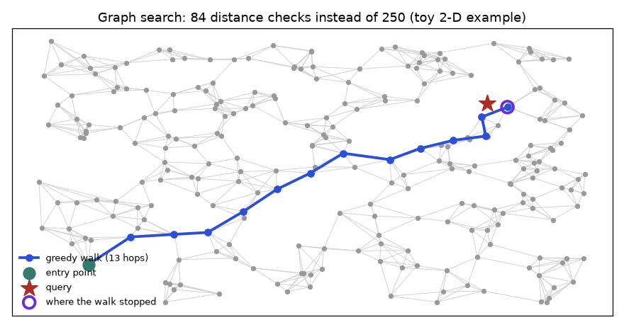
How to read it: grey lines are links, the green dot is the entry point, the blue path is the walk, the red star is the query and the purple ring is where the walk stopped. The walk heads almost straight to the query, never measuring most of the 250 points. Because the picture is only 250 points, the saving is modest; at 50 million points the walk length grows slowly (roughly with the logarithm of N), which is the entire point.
Now a measured experiment at a more realistic size. We build a two-layer graph on 20,000 vectors from scratch (each vector linked to its 12 nearest, plus an upper layer holding about 1 in 16 vectors), then measure recall@10 and the distance computations per query for several efSearch values. The same block also runs the filter experiment discussed in Section 6.6.
import numpy as np, heapq
rng=np.random.default_rng(0)
N,d,M=20000,32,12
centers=rng.normal(size=(60,d))*0.8
X=centers[rng.integers(0,60,N)]+rng.normal(size=(N,d))
X=(X/np.linalg.norm(X,axis=1,keepdims=True)).astype("float32")
Q=X[rng.choice(N,100,replace=False)]+0.15*rng.normal(size=(100,d)).astype("float32")
Q/=np.linalg.norm(Q,axis=1,keepdims=True)
truth=np.argsort(-(Q@X.T),axis=1)[:,:10]
# ---- build: each node links to its M nearest neighbours (exact kNN graph, made two-way)
def knn_graph(ids,M):
P=X[ids]; S=P@P.T; np.fill_diagonal(S,-9)
nb=np.argsort(-S,axis=1)[:,:M]
g={int(ids[i]):set(int(ids[j]) for j in nb[i]) for i in range(len(ids))}
for u in list(g):
for v in g[u]: g[v].add(u)
return g
top_ids=rng.choice(N,N//16,replace=False) # about 1/16 of nodes also live in an upper layer
upper=knn_graph(top_ids,M)
bottom={i:set() for i in range(N)}
for s in range(0,N,1000): # build in blocks of 1000 rows to save memory
blk=X[s:s+1000]@X.T
for r in range(blk.shape[0]): blk[r,s+r]=-9
nb=np.argpartition(-blk,M,axis=1)[:,:M]
for r in range(blk.shape[0]):
for j in nb[r]:
bottom[s+r].add(int(j)); bottom[int(j)].add(s+r)
# ---- search
def greedy(graph,q,start):
cur=start; best=float(X[cur]@q); dist_calls=1
while True:
improved=False
for v in graph[cur]:
dist_calls+=1; sc=float(X[v]@q)
if sc>best: best,cur,improved=sc,v,True
if not improved: return cur,dist_calls
def beam(graph,q,start,ef,allow=None):
seen={start}; calls=1; sc0=float(X[start]@q)
cand=[(-sc0,start)] # cand: max-heap by score
res=[(sc0,start)] if allow is None or allow[start] else [] # res: min-heap of best ef allowed nodes
while cand:
negs,u=heapq.heappop(cand)
if len(res)>=ef and -negs<res[0][0]: break
for v in graph[u]:
if v in seen: continue
seen.add(v); calls+=1; sc=float(X[v]@q)
if len(res)<ef or sc>res[0][0]:
heapq.heappush(cand,(-sc,v))
if allow is None or allow[v]:
heapq.heappush(res,(sc,v))
if len(res)>ef: heapq.heappop(res)
return [v for _,v in sorted(res,reverse=True)],calls
def search(q,ef,k=10,allow=None):
entry,c1=greedy(upper,q,int(top_ids[0]))
out,c2=beam(bottom,q,entry,ef,allow)
return out[:k],c1+c2
print(f"graph: N={N}, M={M}, average links per node={np.mean([len(v) for v in bottom.values()]):.1f}")
for ef in [10,20,40,80,160]:
hit=0; calls=0
for qi,q in enumerate(Q):
r,c=search(q,ef); calls+=c; hit+=len(set(r)&set(truth[qi].tolist()))
print(f"efSearch={ef:>3} recall@10={hit/1000:.3f} distance computations/query={calls/100:>7.0f} ({calls/100/N:.1%} of N)")
# ---- filters: (a) search first, drop non-matching afterwards; (b) check the filter while walking the graph
print("filter efSearch | post-filter: results/10 recall | filter-aware: results/10 recall dist.calcs")
for sel in [0.5,0.1,0.01]:
allow=rng.random(N)<sel # random attribute, unrelated to the vectors
ok=np.nonzero(allow)[0]
for ef in [40,200]:
n_a=n_b=h_a=h_b=tot=calls=0
for q in Q[:50]:
exact=set(ok[np.argsort(-(X[ok]@q))[:10]].tolist())
ra,_=search(q,ef,k=ef) # unfiltered walk, keep ef candidates
ra=[v for v in ra if allow[v]][:10]
rb,cb=search(q,ef,allow=allow); calls+=cb
n_a+=len(ra); n_b+=len(rb); h_a+=len(set(ra)&exact); h_b+=len(set(rb)&exact); tot+=len(exact)
print(f"{sel:>5.0%} {ef:>6} | {n_a/50:>14.1f} {h_a/tot:>10.3f} | {n_b/50:>17.1f} {h_b/tot:>8.3f} {calls/50:>10.0f}")graph: N=20000, M=12, average links per node=17.5
efSearch= 10 recall@10=0.644 distance computations/query= 273 (1.4% of N)
efSearch= 20 recall@10=0.769 distance computations/query= 388 (1.9% of N)
efSearch= 40 recall@10=0.862 distance computations/query= 571 (2.9% of N)
efSearch= 80 recall@10=0.934 distance computations/query= 883 (4.4% of N)
efSearch=160 recall@10=0.979 distance computations/query= 1447 (7.2% of N)
filter efSearch | post-filter: results/10 recall | filter-aware: results/10 recall dist.calcs
50% 40 | 10.0 0.834 | 10.0 0.914 889
50% 200 | 10.0 0.980 | 10.0 0.998 3067
10% 40 | 4.0 0.396 | 10.0 0.984 3149
10% 200 | 10.0 0.948 | 10.0 1.000 10086
1% 40 | 0.4 0.036 | 10.0 1.000 13899
1% 200 | 2.0 0.200 | 10.0 1.000 20058Line by line: (1) knn_graph links every node to its M nearest and makes links two-way, which is why the average is 17.5 links rather than 12. (2) top_ids picks 1/16 of the nodes for the upper layer (real HNSW draws each node's layer at random, see Section 6.12). (3) greedy is the one-candidate walk used on the upper layer to find a good entry point. (4) beam is the bottom-layer search with a candidate max-heap and a results min-heap of size ef; calls counts distance computations. (5) The loop at the end of the first part measures recall and cost for five values of efSearch.
Read the first table: efSearch 10 gives recall 0.644 with 273 distance computations (1.4% of N); 40 gives 0.862 with 571; 80 gives 0.934 with 883; 160 gives 0.979 with 1,447 (7.2%). Compare with IVF on similar overlapping data: reaching about 0.97 needed 20% of the data scanned, while here it takes about 7%. This toy uses an exact nearest-neighbour graph and one upper layer, so it is simpler than production HNSW, but the shape is faithful: recall rises with efSearch with diminishing returns, and cost rises roughly linearly with it.
Problem 6.5.4 From the table, a service needs recall@10 ≥ 0.93 at the fewest distance computations. Choose efSearch and estimate the speed-up over brute force.
| Read | ef 40: 0.862 (too low). ef 80: 0.934 (meets target), 883 computations. ef 160: 0.979, 1,447 computations. |
|---|---|
| Pick | ef = 80 is the cheapest measured setting that passes 0.93. |
| Speed-up | Brute force needs 20,000 computations; 20,000 / 883 = 22.7 times fewer. |
| Answer | efSearch = 80, about 23 times fewer distance computations than exact search, at 6.6% of true neighbours missed. |
| Check | 883 / 20,000 = 4.4%, matching the printed 4.4%. 1 − 0.934 = 0.066 missed. |
| Why it matters | The margin is thin: 0.934 is only 0.004 above target, so re-measure on more queries before shipping, because with 100 queries the measurement itself has noise (Section 6.9). |
Idea. Split each d-dimensional vector into m pieces of d/m numbers. For each piece position, run k-means with 256 clusters on that piece across all vectors, giving a codebook of 256 small centroids. Replace every piece by the number (0 to 255, one byte) of its nearest centroid. A vector is now m bytes instead of d × 4. To search, build a lookup table for the query: the dot product of each query piece with all 256 centroids of that position (m × 256 numbers). The score of any stored vector is then just m table lookups added together. This is called asymmetric distance computation (ADC): the query stays exact, the stored vectors are approximated.
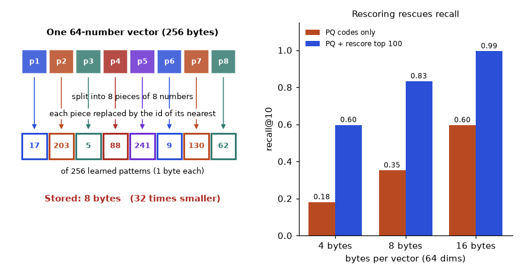
Problem 6.5.5 N = 10 million vectors, d = 768, m = 96 pieces. Compare the arithmetic of one flat query with one PQ query.
| Piece size | 768 / 96 = 8 numbers per piece. |
|---|---|
| Flat | 10,000,000 × 768 = 7.68 billion multiply-adds, reading 30.72 GB. |
| PQ table | Building the lookup table: 96 pieces × 256 centroids × 8 numbers = 196,608 multiply-adds (negligible). |
| PQ scan | 10,000,000 vectors × 96 lookups = 960 million lookup-and-adds, reading 0.96 GB of codes. |
| Answer | 8 times fewer operations (7.68 billion versus 0.96 billion) and 32 times less memory traffic (30.72 GB versus 0.96 GB). |
| Check | 7.68 / 0.96 = 8 = 768 / 96. 30.72 / 0.96 = 32 = 3,072 bytes / 96 bytes. |
| Why it matters | Because search is memory-bound, the 32 times smaller data is the bigger win, and it is why 10 million vectors fit in under 1 GB. |
Now measure what the compression costs in accuracy, on 20,000 vectors of 64 dimensions with overlapping groups. For m = 4, 8, 16 pieces we train PQ and measure (a) the average reconstruction error, (b) recall@10 of PQ scores alone, (c) recall@10 when the top 100 PQ candidates are rescored with the original vectors.
import os
os.environ["OMP_NUM_THREADS"]="1" # one thread, set before importing numpy: k-means then gives the same answer on every run
import numpy as np
from sklearn.cluster import KMeans
rng=np.random.default_rng(0)
N,d,groups=20000,64,60
centers=rng.normal(size=(groups,d))*0.8
X=centers[rng.integers(0,groups,N)]+rng.normal(size=(N,d))
X=(X/np.linalg.norm(X,axis=1,keepdims=True)).astype("float32")
Q=X[rng.choice(N,100,replace=False)]+0.15*rng.normal(size=(100,d)).astype("float32")
Q/=np.linalg.norm(Q,axis=1,keepdims=True)
truth=np.argsort(-(Q@X.T),axis=1)[:,:10]
def train_pq(X,m,ks=256):
sub=X.shape[1]//m; books=[]; codes=np.zeros((len(X),m),dtype=np.uint8)
for j in range(m):
part=X[:,j*sub:(j+1)*sub]
km=KMeans(ks,n_init=1,max_iter=25,random_state=0).fit(part)
books.append(km.cluster_centers_.astype("float32")); codes[:,j]=km.labels_
return books,codes
def adc_scores(q,books,codes):
sub=len(q)//len(books)
# lookup table: dot product of each query piece with all 256 centroids of that piece
table=np.stack([books[j]@q[j*sub:(j+1)*sub] for j in range(len(books))]) # shape (m, 256)
return table[np.arange(len(books)),codes].sum(axis=1) # add m table entries per vector
print(f"full vectors: {d*4} bytes each = {N*d*4/1e6:.1f} MB")
for m in [4,8,16]:
books,codes=train_pq(X,m)
approx=np.hstack([books[j][codes[:,j]] for j in range(m)])
err=np.mean(np.linalg.norm(X-approx,axis=1))
h1=h2=0
for qi,q in enumerate(Q):
s=adc_scores(q,books,codes)
top=np.argsort(-s)
h1+=len(set(top[:10].tolist())&set(truth[qi].tolist()))
cand=top[:100] # rescore 100 candidates with the full vectors
best=cand[np.argsort(-(X[cand]@q))[:10]]
h2+=len(set(best.tolist())&set(truth[qi].tolist()))
print(f"m={m:>2}: {m} bytes/vector ({d*4//m}x smaller), index {N*m/1e6:.2f} MB, "
f"mean reconstruction error {err:.3f}, recall@10 PQ only={h1/1000:.3f}, PQ + rescore 100={h2/1000:.3f}")full vectors: 256 bytes each = 5.1 MB
m= 4: 4 bytes/vector (64x smaller), index 0.08 MB, mean reconstruction error 0.686, recall@10 PQ only=0.181, PQ + rescore 100=0.597
m= 8: 8 bytes/vector (32x smaller), index 0.16 MB, mean reconstruction error 0.529, recall@10 PQ only=0.352, PQ + rescore 100=0.833
m=16: 16 bytes/vector (16x smaller), index 0.32 MB, mean reconstruction error 0.293, recall@10 PQ only=0.596, PQ + rescore 100=0.995Line by line: (1) train_pq loops over the m pieces, clusters each with 256 centroids (KMeans(256)), stores the centroids as books and each vector's nearest centroid number as codes, a uint8 matrix (one byte per piece). (2) adc_scores builds the table of shape (m, 256): query piece against each centroid; table[np.arange(m), codes] picks, for every vector, the table entry of its code in each piece, and .sum(axis=1) adds them: the approximate dot product. (3) The reconstruction error is the average distance between a vector and the vector rebuilt from its codes. (4) For each query we take the PQ top 100 as candidates, recompute their exact scores from the original vectors and keep the best 10: "PQ plus rescore".
Read the output. With 8 bytes per vector (32 times smaller), PQ alone finds only 35% of the true top 10 on this hard data; with rescoring of 100 candidates it finds 83.3%. With 16 bytes, rescoring reaches 99.5%. PQ alone is a shortlist generator, not a final ranking; the exact vectors (kept on disk or in cheaper memory) finish the job. The numbers are low for PQ alone because this synthetic data has noise in all 64 dimensions; real embeddings with more structure compress better, but you must measure on yours.
Choosing between them (rules of thumb to start from, then measure):
| Situation | Start with | Reason |
|---|---|---|
| Under about 100,000 vectors | Flat (exact) | A full scan takes milliseconds; no recall loss, no tuning |
| Millions, RAM available, low latency matters | HNSW | High recall at few distance computations; costs extra memory for links and slower builds |
| Very large, RAM is the limit | IVF with PQ (IVF-PQ), rescoring with full vectors | Compressed codes; lists keep scanning cheap |
| Index changes constantly | HNSW or a database that supports incremental inserts | IVF centroids drift as data changes and need periodic retraining |
| Billions, data on SSD | Disk-based graph indexes (DiskANN style) or IVF-PQ | Keeps only compressed data in RAM |
Check yourself
Answer: 4,000,000 / 400 = 10,000 per list; 400 + 8 × 10,000 = 80,400.
Answer: It can reach a local optimum where no neighbour is closer even though a closer node exists elsewhere. A beam (efSearch greater than 1) keeps alternatives alive.
Answer: It recomputes exact scores for the shortlist using the full vectors, repairing the errors made by the compressed codes.
The simplest honest vector store: a SQL table with the metadata columns and the embedding as a binary column, filtered by SQL and scored with NumPy. It is the right design below about a million rows, and it shows exactly what a pre-filter and a post-filter do.
import sqlite3, numpy as np
rng=np.random.default_rng(3)
N,d=3000,32
E=rng.normal(size=(N,d)).astype("float32"); E/=np.linalg.norm(E,axis=1,keepdims=True)
depts=rng.choice(["billing","account","plans","legal"],N,p=[0.45,0.3,0.2,0.05])
years=rng.choice([2023,2024,2025],N,p=[0.2,0.3,0.5])
con=sqlite3.connect(":memory:")
con.execute("CREATE TABLE chunks(id INTEGER PRIMARY KEY, dept TEXT, year INT, emb BLOB)")
con.executemany("INSERT INTO chunks VALUES(?,?,?,?)",
[(i,str(depts[i]),int(years[i]),E[i].tobytes()) for i in range(N)])
con.execute("CREATE INDEX idx_dept_year ON chunks(dept,year)")
def search_pre(q,dept,year,k=5):
"""Pre-filter: SQL picks the allowed rows first, then we score only those."""
rows=con.execute("SELECT id, emb FROM chunks WHERE dept=? AND year=?",(dept,year)).fetchall()
if not rows: return [],0
ids=np.array([r[0] for r in rows]); M=np.vstack([np.frombuffer(r[1],dtype="float32") for r in rows])
s=M@q; o=np.argsort(-s)[:k]
return [(int(ids[i]),round(float(s[i]),3)) for i in o],len(rows)
def search_post(q,dept,year,k=5):
"""Post-filter: take the global top k, then drop rows that fail the filter."""
top=np.argsort(-(E@q))[:k]
keep=[int(i) for i in top if depts[i]==dept and years[i]==year]
return keep
q=E[7]
print("query row 7 has dept=%s year=%d"%(depts[7],years[7]))
print("pre-filter legal/2023:",search_pre(q,"legal",2023))
print("post-filter legal/2023:",search_post(q,"legal",2023))
print("pre-filter billing/2025:",search_pre(q,"billing",2025))
print("post-filter billing/2025:",search_post(q,"billing",2025))
# how many rows does each filter keep?
for dept,year in [("billing",2025),("legal",2023)]:
n=con.execute("SELECT COUNT(*) FROM chunks WHERE dept=? AND year=?",(dept,year)).fetchone()[0]
print(f"{dept}/{year}: {n} of {N} rows = {n/N:.1%}")query row 7 has dept=legal year=2025
pre-filter legal/2023: ([(2131, 0.295), (2998, 0.256), (864, 0.229), (1586, 0.223), (1337, 0.102)], 25)
post-filter legal/2023: []
pre-filter billing/2025: ([(186, 0.643), (2706, 0.538), (1756, 0.51), (576, 0.505), (2060, 0.449)], 707)
post-filter billing/2025: [186, 2706]
billing/2025: 707 of 3000 rows = 23.6%
legal/2023: 25 of 3000 rows = 0.8%Line by line: (1) We create 3,000 random unit vectors with a department (billing 45%, account 30%, plans 20%, legal 5%) and a year (2023: 20%, 2024: 30%, 2025: 50%). (2) The table stores emb as bytes (tobytes()) and an index on (dept, year) so the SQL filter is fast. (3) search_pre asks SQLite for the ids and vectors that satisfy the filter, rebuilds a matrix with np.frombuffer, scores it and sorts. (4) search_post takes the global top k first and then keeps only the rows that pass the filter. (5) We query with the vector of row 7. The narrow filter legal/2023 keeps only 25 of 3,000 rows (0.8%): the pre-filter returns 5 valid results, the post-filter returns an empty list. The wide filter billing/2025 keeps 23.6%: the pre-filter returns 5, the post-filter returns 2 (items 186 and 2706) because the other three of the global top 5 failed the filter.
Problem 6.6.1 A post-filter fetches the top 10, then applies a filter that keeps 5% of chunks at random. How many results do you expect to return? How many must you fetch before filtering to expect 10? Why is the practical number larger?
| Formula | Expected survivors = fetched × selectivity, where selectivity is the share of chunks that pass the filter (5% = 0.05). |
|---|---|
| Part 1 | 10 × 0.05 = 0.5 results on average. Many queries return zero. |
| Part 2 | fetch × 0.05 = 10 gives fetch = 200. |
| Why more | Survivors vary from query to query (they behave like coin flips). With fetch = 200 the average is 10, so about half the queries get fewer than 10. In the simulation behind the figure below, fetch = 200 at 5% selectivity returned 8.6 results on average (capped at 10); fetching 400 would be safer. |
| Answer | 0.5 expected results; fetch about 200 to 400. |
| Check | At 50% selectivity, fetching 10 gives 5 on average, which is what the figure's lowest line shows at the right edge. |
| Why it matters | Over-fetching costs latency and still fails for very narrow filters; real systems pre-filter or use a filter-aware index. |
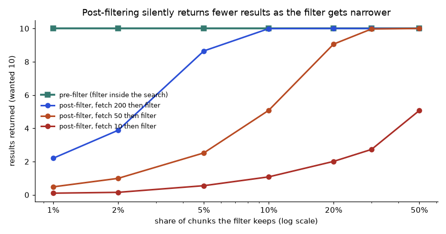
How to read it: the horizontal axis is how much of the corpus the filter allows (right is a wide filter, left is narrow). The flat green line is a pre-filter: always 10 results. The other lines fetch 10, 50 or 200 results from an unfiltered search and then filter. They all collapse towards zero on the left.
The experiment in Section 6.5 also ran filters on the HNSW-style graph. The second table (printed after the efSearch table) compares two strategies on the same graph for filters that keep 50%, 10% and 1% of the nodes. "Post-filter" walks the graph normally and then drops disallowed results. "Filter-aware" walks the graph normally too, but only lets allowed nodes enter the result list, so the search continues until it has enough valid results.
Read it: at a 10% filter and efSearch 40, post-filtering returns only 4.0 results on average (recall 0.396), while the filter-aware walk returns 10 with recall 0.984. At a 1% filter even efSearch 200 gives post-filtering just 2.0 results with recall 0.200, while the filter-aware walk returns 10 with recall 1.000. But look at the last column: the filter-aware walk at 1% computed 13,899 distances (efSearch 40) and 20,058 (efSearch 200) with only 20,000 vectors in the index. It had to wander across the whole graph to find the rare allowed nodes, which is as expensive as brute force.
Problem 6.6.2 The filter keeps 1% of 20,000 vectors. Compare the cost of (a) the filter-aware graph walk measured above (about 13,900 distance computations at efSearch 40), (b) pre-filter then brute force.
| Setup | 1% of 20,000 = 200 vectors pass the filter. |
|---|---|
| (a) Graph | About 13,899 distance computations for recall 1.000 (measured). |
| (b) Pre-filter + scan | Fetch the 200 allowed ids from the metadata index (an index lookup, not a vector comparison) and score exactly those: 200 distance computations, recall 1.000 by construction (it is exact search on the subset). |
| Answer | For very selective filters, brute force on the matching subset is about 70 times cheaper (13,899 / 200 = 69.5) and exact. This is why vector databases switch strategy by estimated selectivity: broad filter, graph search with filtering; narrow filter, scan the subset. |
| Check | If the filter keeps 50%, the subset is 10,000 vectors: the graph walk at 889 computations (measured) is cheaper than scanning them. The crossover sits between. |
| Why it matters | When someone says "our filtered search is slow", ask for the selectivity first. |
Problem 6.1.3 showed that a similarity score is evidence, not truth. Three rules make a retriever safe when nothing is relevant: (1) return fewer than k results, or none, when scores fall below a calibrated threshold; (2) have the generator say "I could not find this in the documents" on an empty context; (3) log queries with empty or weak results, because they are your list of missing documents.
Problem 6.6.3 A support bot gets 1,000 questions a day; 800 are answerable. On a labelled sample, threshold 0.40 refuses 10% of answerable questions and answers 30% of the unanswerable ones. Per day, how many wrong refusals and how many unsupported answers (risk of invention) are there?
| Counts | Answerable = 800. Unanswerable = 1,000 − 800 = 200. |
|---|---|
| Wrong refusals | 10% of 800 = 80 per day. |
| Unsupported answers | 30% of 200 = 60 per day. |
| Answer | 80 wrong refusals and 60 questions where the system answers without evidence. |
| Check | Raise the threshold so refusals reach 20% of answerable (160 wrong refusals) and unsupported answers fall to 10% (20 per day): you traded 80 more annoyed users for 40 fewer risky answers. Whether that is good depends on the cost of each error. |
| Why it matters | The threshold is a business decision made with numbers, not a technical constant. |
Check yourself
Answer: 20 × 0.02 = 0.4.
Answer: When the filter is very selective, so that the allowed subset is small enough to scan exactly.
Answer: So that unauthorised chunks are never retrieved, and so a narrow permission does not leave the user with empty results.
For a query word t and a chunk D with length |D| words, in a corpus of N chunks, where nt chunks contain t and the average chunk length is avgdl:
The score of a chunk for a query is the sum over the query words. Here tf is the number of times t occurs in D, k1 (usually 1.2 to 2) limits how much repeating a word helps, and b (usually 0.75) sets how much long chunks are penalised. Three ideas: rare words count more (idf), repeating a word helps with diminishing returns (the tf saturation), and a word in a short chunk matters more than the same word in a long one (length normalisation).
Problem 6.7.1 Three chunks: A has 8 words and contains "refund" once; B has 18 words and contains "refund" once; C has 9 words and no "refund". Compute BM25 for the query "refund" with k1 = 1.5, b = 0.75.
| Corpus facts | N = 3. nt = 2 (A and B). avgdl = (8 + 18 + 9) / 3 = 11.667. |
|---|---|
| idf | ln(1 + (3 − 2 + 0.5) / (2 + 0.5)) = ln(1 + 1.5 / 2.5) = ln(1.6) = 0.4700. |
| Chunk A | Length term: 1.5 × (1 − 0.75 + 0.75 × 8 / 11.667) = 1.5 × (0.25 + 0.5143) = 1.5 × 0.7643 = 1.1464. Score = 0.4700 × 1 × 2.5 / (1 + 1.1464) = 1.1750 / 2.1464 = 0.5474. |
| Chunk B | Length term: 1.5 × (0.25 + 0.75 × 18 / 11.667) = 1.5 × (0.25 + 1.1571) = 2.1107. Score = 1.1750 / (1 + 2.1107) = 0.3777. |
| Chunk C | tf = 0, so the score is 0. |
| Answer | A 0.5474, B 0.3777, C 0. The same word in the shorter chunk scores higher. |
| Check | Run the code below. Also: A and B are the only chunks containing the word, and both tf values are 1, so only length can separate them, in the right direction. |
import math
# BM25 for the query "refund" against three chunks, by hand then in code. k1=1.5, b=0.75
docs={"A":"refund requests are processed within 7 business days".split(),
"C":"two factor authentication can be enabled in security settings".split(),
"B":"invoices are emailed on the first day of every month and refund rules are on the billing page".split()}
n=len(docs); avg=sum(len(t) for t in docs.values())/n
df=sum("refund" in t for t in docs.values())
idf=math.log(1+(n-df+0.5)/(df+0.5))
print("N =",n," avg length =",round(avg,3)," df(refund) =",df," idf =",round(idf,4))
for name,t in sorted(docs.items()):
tf=t.count("refund"); L=len(t)
norm=1.5*(1-0.75+0.75*L/avg)
s=idf*tf*(1.5+1)/(tf+norm)
print(f"chunk {name}: length={L} tf={tf} length-norm term={norm:.4f} BM25={s:.4f}")N = 3 avg length = 11.667 df(refund) = 2 idf = 0.47
chunk A: length=8 tf=1 length-norm term=1.1464 BM25=0.5474
chunk B: length=18 tf=1 length-norm term=2.1107 BM25=0.3777
chunk C: length=9 tf=0 length-norm term=1.2429 BM25=0.0000Line by line: (1) docs are the three chunks as word lists. (2) avg is the average length, df the number of chunks containing "refund", idf the formula above. (3) For each chunk, norm is k1 × (1 − b + b × L / avg), and the BM25 contribution is idf × tf × (k1 + 1) / (tf + norm). The printed values equal the hand calculation: 0.5474, 0.3777, 0.
We have ten help-centre chunks, including two near-identical error-code chunks (XJ-4471 and XJ-4472) and chunks that paraphrase the question ("Money is returned to the original payment method" for a refund question). We run 10 test queries in three groups: paraphrases with no shared words, exact codes, and mixed. No embedding model can be downloaded here, so the "dense" retriever is a stand-in, built to behave like a real embedding model in the two ways that matter: synonyms share a concept token (so paraphrases match), and digits are dropped (so two codes that differ only in digits look identical, which real models also tend to blur). BM25 is the from-scratch version above with a crude stemmer. This is a teaching simulation: the pattern of failures is the lesson, not the exact scores.
import re, math
import numpy as np
from collections import Counter
docs={"h1":"Refund requests are processed within 7 business days.",
"h2":"Money is returned to the original payment method after approval.",
"h3":"Error XJ-4471 means the payment gateway timed out; retry after five minutes.",
"h4":"Error XJ-4472 means the card was declined by the issuing bank.",
"h5":"To reset your password click Forgot Password on the login page.",
"h6":"Two factor authentication can be enabled in security settings.",
"h7":"Premium plan includes 24x7 phone support.",
"h8":"Cancel your subscription any time from the billing page.",
"h9":"Invoices are emailed on the first day of every month.",
"h10":"You can close your account permanently from privacy settings."}
queries=[("when will I get reimbursed","h2"),("I lost my credentials","h5"),
("erase everything about me","h10"),("stop my plan from renewing","h8"), # paraphrases
("XJ-4471","h3"),("XJ-4472","h4"),("what does XJ-4472 mean","h4"), # exact codes
("how long do refunds take","h1"),("extra login security","h6"),("payment error XJ-4471","h3")] # mixed
ids=list(docs)
def words(t): return [w[:-1] if len(w)>3 and w.endswith("s") else w
for w in re.findall(r"[a-z0-9]+(?:-[a-z0-9]+)*",t.lower())]
# ---- BM25 from scratch
toks={i:words(t) for i,t in docs.items()}
avg=np.mean([len(t) for t in toks.values()]); n=len(docs)
df=Counter(w for t in toks.values() for w in set(t))
def bm25(q,k1=1.5,b=0.75):
sc=[]
for i in ids:
tf=Counter(toks[i]); s=0.0
for w in set(words(q)):
if w in tf:
idf=math.log(1+(n-df[w]+0.5)/(df[w]+0.5))
s+=idf*tf[w]*(k1+1)/(tf[w]+k1*(1-b+b*len(toks[i])/avg))
sc.append(s)
return np.array(sc)
# ---- "dense" stand-in: synonyms share a concept token, digits are dropped (codes blur together)
CONCEPT={"refund":"REFUND","reimbursed":"REFUND","reimburse":"REFUND","money":"REFUND","return":"REFUND","returned":"REFUND","back":"REFUND",
"password":"ACCESS","login":"ACCESS","credential":"ACCESS","reset":"ACCESS",
"cancel":"CANCEL","stop":"CANCEL","renewing":"CANCEL","subscription":"CANCEL",
"delete":"REMOVE","erase":"REMOVE","close":"REMOVE","permanently":"REMOVE",
"security":"SECURE","authentication":"SECURE","factor":"SECURE"}
def dense_words(t):
out=[]
for w in words(t):
w=re.sub(r"-?[0-9]+","",w)
if w: out.append(CONCEPT.get(w,w))
return out
from sklearn.feature_extraction.text import TfidfVectorizer
tv=TfidfVectorizer(tokenizer=dense_words,token_pattern=None,sublinear_tf=True)
D=tv.fit_transform(docs.values()).toarray(); D/=np.linalg.norm(D,axis=1,keepdims=True)
def dense(q):
v=tv.transform([q]).toarray()[0]; nn=np.linalg.norm(v); return D@(v/nn if nn else v)
def order(scores): # only chunks with a positive score are "retrieved"
return [ids[i] for i in np.argsort(-scores,kind="stable") if scores[i]>0]
def rank_of(scores,target):
o=order(scores); return o.index(target)+1 if target in o else 99 # 99 = not retrieved
def rrf(rank_lists,k=60):
s=Counter()
for r in rank_lists:
for pos,d in enumerate(r,1): s[d]+=1/(k+pos)
return s
print(f"{'query':38} {'BM25':>5} {'dense':>6} {'hybrid':>7} (rank of the right chunk, 99 = not retrieved)")
res={"bm25":[], "dense":[], "hybrid":[]}
for q,t in queries:
rb=rank_of(bm25(q),t); rd=rank_of(dense(q),t)
fused=rrf([order(bm25(q)),order(dense(q))]); fo=sorted(fused,key=lambda d:-fused[d]); rh=fo.index(t)+1 if t in fo else 99
res["bm25"].append(rb); res["dense"].append(rd); res["hybrid"].append(rh)
print(f"{q:38} {rb:>5} {rd:>6} {rh:>7}")
for m,r in res.items():
r=np.where(np.array(r)==99,np.inf,np.array(r)); print(f"{m:7} recall@3={np.mean(r<=3):.3f} MRR={np.mean(1/r):.3f}")query BM25 dense hybrid (rank of the right chunk, 99 = not retrieved)
when will I get reimbursed 99 1 1
I lost my credentials 99 1 1
erase everything about me 99 1 1
stop my plan from renewing 2 1 2
XJ-4471 1 2 1
XJ-4472 1 1 1
what does XJ-4472 mean 1 1 1
how long do refunds take 1 2 1
extra login security 1 2 1
payment error XJ-4471 1 1 1
bm25 recall@3=0.700 MRR=0.650
dense recall@3=1.000 MRR=0.850
hybrid recall@3=1.000 MRR=0.950Line by line: (1) bm25 computes the scores of all ten chunks for a query. (2) CONCEPT maps synonyms to one token, and dense_words strips digits from codes; dense is the TF-IDF cosine on those tokens. (3) order returns only chunks with a positive score: a chunk with BM25 score 0 was not retrieved, so it gets rank 99 in the table. (4) rrf merges the two ranked lists with 1/(60 + rank). (5) The loop prints the rank of the correct chunk under each method; the last lines average recall@3 (was the right chunk in the top 3?) and MRR (mean of 1/rank, with 0 for not retrieved).
Read it. BM25 never retrieved the right chunk for three of the four paraphrase queries (rank 99): "reimbursed", "credentials" and "erase" share no word with the answers. Dense found all four. In the other direction, dense put the right chunk at rank 2 for "XJ-4471" (because it cannot tell XJ-4471 from XJ-4472) and for two mixed queries; BM25 had rank 1 for every exact-code and mixed query. The merge got rank 1 for 9 of 10 queries and never worse than rank 2: recall@3 of 1.000, MRR 0.950, against 0.650 for BM25 and 0.850 for dense.
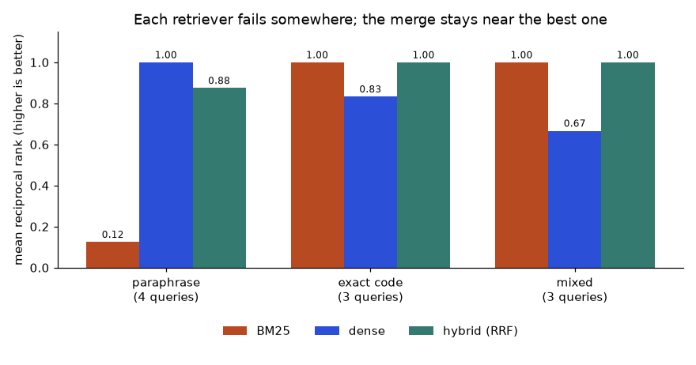
How to read it: each group of three bars is one query type; taller is better. Look for the short bar in each group: that is the retriever's weakness. The green hybrid bars are never the shortest.
Problem 6.7.2 From the ranks in the table, compute MRR for all three methods on the exact-code group (queries XJ-4471, XJ-4472, "what does XJ-4472 mean") by hand, and say what the result means.
| Ranks | BM25: 1, 1, 1. Dense: 2, 1, 1. Hybrid: 1, 1, 1. |
|---|---|
| Formula | MRR = average of 1 / rank. |
| Compute | BM25: (1 + 1 + 1) / 3 = 1.000. Dense: (0.5 + 1 + 1) / 3 = 0.833. Hybrid: 1.000. |
| Answer | BM25 1.00, dense 0.83, hybrid 1.00, matching the figure. |
| Check | MRR can never exceed 1 and equals 1 only when every right answer is ranked first. |
| Meaning | For identifier-heavy queries, the exact-match retriever is the safer one and the hybrid inherits that strength. Dense alone would show "mostly fine" on average and hide the gap unless you split results by query type. |
RRF(d) = Σ 1 / (k + ranki(d)) over the lists where d appears. With k = 60, one list gives at most 1/61 = 0.01639, two lists at most 2/61 = 0.03279. The constant k flattens the difference between rank 1 and rank 5 so that no single list dominates; a smaller k (say 10) makes top ranks count more. Properties worth knowing: a chunk found by one list only can still win if the other lists rank their chunks lower; agreement between lists beats a single high rank; and RRF ignores the score values completely, so a BM25 score of 40 and a cosine of 0.3 need no calibration.
Problem 6.7.3 Three retrievers return ranked lists: A = [x, y, z], B = [y, z, x], C = [z, x, y]. Compute RRF with k = 60 for x, y, z. Then change list C to [x, y, z] and recompute.
| Ranks (first case) | x: ranks 1, 3, 2. y: ranks 2, 1, 3. z: ranks 3, 2, 1. |
|---|---|
| x | 1/61 + 1/63 + 1/62 = 0.016393 + 0.015873 + 0.016129 = 0.048395. |
| y | 1/62 + 1/61 + 1/63 = 0.016129 + 0.016393 + 0.015873 = 0.048395. |
| z | 1/63 + 1/62 + 1/61 = 0.015873 + 0.016129 + 0.016393 = 0.048395. |
| Answer 1 | A three-way tie at 0.048395: the lists disagree perfectly, so RRF has no preference (break ties by a rule you control, such as the best single rank or the reranker). |
| Second case | C = [x, y, z]. x: ranks 1, 3, 1 = 1/61 + 1/63 + 1/61 = 0.016393 + 0.015873 + 0.016393 = 0.048659. y: ranks 2, 1, 2 = 0.016129 + 0.016393 + 0.016129 = 0.048651. z: ranks 3, 2, 3 = 0.015873 + 0.016129 + 0.015873 = 0.047875. |
| Answer 2 | Order x (0.048659), y (0.048651), z (0.047875). |
| Check | With three lists and ranks from 1 to 3, every score lies between 3/63 = 0.0476 and 3/61 = 0.0492. They do. |
One more variant you will meet: weighted fusion, where you multiply each list's RRF contribution by a weight (for example 1.0 for vectors and 0.5 for BM25), or fuse normalised scores instead of ranks (min-max normalise each list to 0..1 then add). Score fusion can beat RRF when the score scales are well behaved and you have labelled data to tune the weights; RRF is the safe default because it needs neither.
XJ-4471 into xj and 4471, so searches for XJ-4472 also match chunks about other XJ codes, or stop-word lists and stemmers mangle product names. Right: check what tokens your keyword index actually produces for IDs, SKUs and error codes, keep them intact (for example a separate field or an analyzer that preserves hyphenated codes), and add test queries for them.Check yourself
Answer: Length normalisation: in a long chunk a single occurrence is less informative about the whole chunk.
Answer: 1/61 = 0.01639 versus 2/63 = 0.03175: the chunk found by both lists wins.
Answer: Exact identifiers, names, error codes, rare terms and quoted phrases.
A reranker can only reorder what the first stage gave it. If the right chunk is not among the top depth candidates, no reranker can rescue it. So final recall@5 ≤ first-stage recall@depth. Depth is therefore the knob that trades recall (higher is better) against reranking time (lower is better). We simulate 2,000 queries with 1,000 candidates each: in stage 1 the single relevant chunk gets a score boost of 3.0 standard deviations over random noise; the reranker gets an independent, stronger boost of 5.0 (a better model reads more carefully). We hand the top depth candidates to the reranker and keep its best 5.
import numpy as np
rng=np.random.default_rng(7)
Q,C=2000,1000 # 2000 queries, 1000 candidate chunks each, 1 relevant chunk per query
s1=rng.normal(size=(Q,C)); s1[:,0]+=3.0 # stage-1 score: relevant chunk (column 0) gets a +3.0 boost
s2=rng.normal(size=(Q,C)); s2[:,0]+=5.0 # reranker score: independent noise, stronger boost +5.0
order1=np.argsort(-s1,axis=1) # stage-1 ranking of each query
print(f"{'depth':>6} {'stage-1 recall@depth':>21} {'final recall@5':>15} {'pairs reranked':>15} {'seconds @20ms/pair':>19}")
for depth in [5,10,20,50,100,200,1000]:
cand=order1[:,:depth] # candidates handed to the reranker
r1=np.mean((cand==0).any(axis=1)) # was the relevant chunk among them?
rr=np.take_along_axis(s2,cand,axis=1) # reranker scores of those candidates only
best5=np.take_along_axis(cand,np.argsort(-rr,axis=1)[:,:5],axis=1)
r2=np.mean((best5==0).any(axis=1))
print(f"{depth:>6} {r1:>21.3f} {r2:>15.3f} {depth:>15} {depth*0.020:>19.1f}") depth stage-1 recall@depth final recall@5 pairs reranked seconds @20ms/pair
5 0.652 0.652 5 0.1
10 0.747 0.747 10 0.2
20 0.837 0.837 20 0.4
50 0.919 0.918 50 1.0
100 0.960 0.959 100 2.0
200 0.989 0.987 200 4.0
1000 1.000 0.989 1000 20.0Line by line: (1) s1 are stage-1 scores for 2,000 queries × 1,000 chunks, noise with the relevant chunk (column 0) boosted by 3.0. s2 are the reranker's scores, independent noise with a boost of 5.0. (2) order1 ranks the chunks by stage-1 score. (3) For each depth, cand are the top depth chunk indices; r1 is the share of queries whose relevant chunk (index 0) is among them: stage-1 recall@depth. (4) The reranker scores only those candidates (take_along_axis), and best5 keeps its five best; r2 is final recall@5. (5) The last column is the time at 20 ms per pair, sequentially.
Read it. Without reranking, taking only the first-stage top 5 gives recall 0.652 (first row, depth 5). Reranking the top 50 lifts final recall@5 to 0.918 for 1.0 second of sequential reranking; the top 100 gives 0.959; the top 200 gives 0.987. Every final value is just under the stage-1 recall at the same depth, which is the ceiling rule in action. Doubling depth from 100 to 200 buys 2.8 recall points for twice the time. At depth 1,000 (rerank everything) recall is 0.989 but the cost is 20 seconds. This is the shape of nearly every funnel: steep gains at first, then a long flat tail.
Problem 6.8.1 Your retrieval stage must finish within 300 ms at p95. Measured: query embedding 30 ms; vector search 25 ms and BM25 20 ms run in parallel; merge 1 ms. The cross-encoder on a GPU scores 500 pairs per second in batches. What depth do you pick from {20, 50, 100, 200}?
| Budget | 300 ms total. Fixed parts: 30 (embed) + max(25, 20) (parallel searches) + 1 (merge) = 56 ms. |
|---|---|
| Left for rerank | 300 − 56 = 244 ms. At 500 pairs per second, 244 ms reads 0.244 × 500 = 122 pairs. |
| Options | Depth 20 = 40 ms, 50 = 100 ms, 100 = 200 ms, 200 = 400 ms (too slow). |
| Answer | Depth 100: 56 + 200 = 256 ms, inside the budget with 44 ms spare for variation, and from the table it gives recall 0.959 against 0.918 at depth 50. |
| Check | Depth 200 would give 56 + 400 = 456 ms, over budget by 156 ms. Depth 122 is the theoretical maximum. |
| Why it matters | Budgets are usually quoted at p95, so measure the tail of each stage, not its average, and leave headroom. If the headroom is too small, shrink depth rather than let the slow tail break the user experience. |
A bi-encoder squeezes a chunk into one vector, which loses detail. A cross-encoder keeps all detail but cannot precompute anything. Late interaction is in between: store one small vector for every token of the chunk; at query time, for each query token find its best-matching chunk token, and add those best scores. The operation is called MaxSim. Chapter 2, Section 2.4, introduced the idea; here is the arithmetic.
import numpy as np
# ColBERT-style late interaction by hand: one small vector per token, score = sum over query tokens of the best match
q=np.array([[1.0,0.0],[0.0,1.0]]) # 2 query tokens (2-dim toy vectors, unit length)
docA=np.array([[0.8,0.6],[0.6,0.8],[1.0,0.0]]) # 3 document tokens
docB=np.array([[0.0,1.0],[0.6,0.8]]) # 2 document tokens
for name,D in [("A",docA),("B",docB)]:
sim=q@D.T # (query tokens x doc tokens) cosine matrix
best=sim.max(axis=1) # best doc token for every query token
print(f"doc {name}: similarity matrix=\n{sim}\n best per query token={best} MaxSim score={best.sum():.2f}")
# a single-vector (bi-encoder) comparison: average the token vectors and compare
for name,D in [("A",docA),("B",docB)]:
v=D.mean(axis=0); v/=np.linalg.norm(v); qv=q.mean(axis=0); qv/=np.linalg.norm(qv)
print(f"doc {name}: single-vector cosine={qv@v:.3f}")doc A: similarity matrix=
[[0.8 0.6 1. ]
[0.6 0.8 0. ]]
best per query token=[1. 0.8] MaxSim score=1.80
doc B: similarity matrix=
[[0. 0.6]
[1. 0.8]]
best per query token=[0.6 1. ] MaxSim score=1.60
doc A: single-vector cosine=0.967
doc B: single-vector cosine=0.894Line by line: (1) q has two query-token vectors; docA three chunk-token vectors; docB two. (2) q @ D.T is the matrix of all query-token versus chunk-token cosines (all vectors have length 1). (3) .max(axis=1) takes, for each query token, its best match in the chunk. (4) The sum is the MaxSim score. (5) The last loop compares with a single averaged vector per chunk. Read it: for chunk A, query token 1 matches its third token perfectly (1.0) and query token 2 matches its second token at 0.8, giving 1.80; chunk B scores 0.6 + 1.0 = 1.60. The single-vector cosines (0.967 and 0.894) happen to give the same order here, but they could not tell you which query token matched which chunk token.
Problem 6.8.2 A chunk has 200 tokens. A single-vector index stores 768 float32 numbers. A ColBERT-style index stores 128 float16 numbers per token. How much more storage per chunk, and how much for 10 million chunks?
| Single vector | 768 × 4 bytes = 3,072 bytes. |
|---|---|
| Late interaction | 200 tokens × 128 numbers × 2 bytes = 51,200 bytes. |
| Ratio | 51,200 / 3,072 = 16.67 times more. |
| 10 million chunks | Single: 30.72 GB. Late interaction: 512 GB. |
| Answer | About 16.7 times more storage (512 GB versus 30.7 GB for 10 million chunks), the price of keeping token-level detail. |
| Check | 10,000,000 × 51,200 = 512,000,000,000 bytes = 512 GB. Compression of the token vectors (to 1 or 2 bits per number) is how production systems bring this down. |
| Why it matters | Late interaction can be a good second-stage reranker over a few hundred candidates (store token vectors only for chunks you might rerank) when you want better quality than a bi-encoder at lower cost than a cross-encoder. |
Three more ways to cut memory, all with a recall price. Truncation keeps only the first dimensions of a vector; it works well only for models trained so that early dimensions carry the most information (Matryoshka-style embeddings; Chapter 2 introduces them). Scalar quantization stores each number as an 8-bit integer (4 times smaller). Binary quantization keeps only the sign of each number (1 bit; 32 times smaller) and compares by counting differing bits (Hamming distance), which is very fast; it is normally followed by rescoring with the full vectors. We measure all three on synthetic data (20,000 vectors, 512 dimensions). Recall here is measured against the exact top 10 of the full vectors, a strict test, so the numbers look lower than "relevance" metrics usually do.
import numpy as np
rng=np.random.default_rng(0)
N,d,nq=20000,512,100
def make(scale,spread):
latent=rng.normal(size=(60,d))*scale*spread
X=latent[rng.integers(0,60,N)]+rng.normal(size=(N,d))*scale
X=(X/np.linalg.norm(X,axis=1,keepdims=True)).astype("float32")
Q=X[rng.choice(N,nq,replace=False)]+0.05*rng.normal(size=(nq,d)).astype("float32")*scale
return X,(Q/np.linalg.norm(Q,axis=1,keepdims=True)).astype("float32")
def recall(top,truth): return np.mean([len(set(top[i].tolist())&set(truth[i].tolist()))/10 for i in range(nq)])
def renorm(A): return A/np.linalg.norm(A,axis=1,keepdims=True)
print("A. Matryoshka-style truncation (leading dimensions carry most of the signal)")
X,Q=make(1/np.sqrt(1+np.arange(d)/16),2.5)
truth=np.argsort(-(Q@X.T),axis=1)[:,:10]
for cut in [512,256,128,64]:
top=np.argsort(-(renorm(Q[:,:cut])@renorm(X[:,:cut]).T),axis=1)[:,:10]
print(f" first {cut:>3} dims: {cut*4:>4} bytes/vector, recall@10={recall(top,truth):.3f}")
print("B. Scalar and binary quantisation (all dimensions equally informative)")
X,Q=make(np.ones(d),1.0)
truth=np.argsort(-(Q@X.T),axis=1)[:,:10]
print(f" float32 : {d*4:>4} bytes/vector, recall@10=1.000")
sc=np.abs(X).max(axis=0)/127 # one scale per dimension
Xi=np.round(X/sc).astype(np.int8)
top=np.argsort(-(Q@(Xi*sc).T),axis=1)[:,:10]
print(f" int8 : {d:>4} bytes/vector, recall@10={recall(top,truth):.3f}")
Xb=X>0; Qb=Q>0
ham=(Qb[:,None,:]!=Xb[None,:,:]).sum(axis=2) # Hamming distance = number of differing bits
top=np.argsort(ham,axis=1)[:,:10]
print(f" binary : {d//8:>4} bytes/vector, recall@10={recall(top,truth):.3f}")
cand=np.argsort(ham,axis=1)[:,:100]
top=np.array([cand[i][np.argsort(-(X[cand[i]]@Q[i]))[:10]] for i in range(nq)])
print(f" binary + rescore top 100 with float vectors: recall@10={recall(top,truth):.3f}")A. Matryoshka-style truncation (leading dimensions carry most of the signal)
first 512 dims: 2048 bytes/vector, recall@10=1.000
first 256 dims: 1024 bytes/vector, recall@10=0.819
first 128 dims: 512 bytes/vector, recall@10=0.693
first 64 dims: 256 bytes/vector, recall@10=0.570
B. Scalar and binary quantisation (all dimensions equally informative)
float32 : 2048 bytes/vector, recall@10=1.000
int8 : 512 bytes/vector, recall@10=0.988
binary : 64 bytes/vector, recall@10=0.288
binary + rescore top 100 with float vectors: recall@10=0.812Line by line: (1) make creates unit-length vectors and queries; in part A the variance of dimension i decays as 1/√(1 + i/16), imitating a model whose leading dimensions are most informative; in part B all dimensions are equally informative. (2) Part A cuts the vectors to their first cut dimensions, re-normalises, and searches. (3) Part B int8: sc is the largest absolute value per dimension divided by 127; np.round(X / sc) gives integers in −127..127; we search by multiplying the query with the dequantised vectors. (4) Binary: X > 0 keeps the sign; ham counts differing bits between each query and each stored vector; the top 10 by smallest Hamming distance are the answer. (5) The last lines take the best 100 by Hamming distance and rescore them with the float vectors.
Read it. Truncating to a quarter of the dimensions (128 of 512) keeps recall at 0.693 on this data; int8 keeps 0.988 at one quarter of the memory (a nearly free saving); pure binary keeps only 0.288 at 1/32 of the memory but adding a rescore of the best 100 candidates brings it to 0.812. With a larger candidate list (several hundred), binary plus rescoring recovers more. Reports for high-quality real embedding models with binary codes plus rescoring are usually much better than this synthetic test, but they depend on the model, which is why you must test on your own embeddings rather than trust either my table or someone's blog.
Problem 6.8.3 You must index 100 million chunks of 1,024 dimensions. Compute the memory of float32, int8 and binary storage, and propose a design for a machine with 128 GB of RAM and a large SSD.
| float32 | 100,000,000 × 1,024 × 4 = 409.6 GB. |
|---|---|
| int8 | 100,000,000 × 1,024 × 1 = 102.4 GB. |
| binary | 1,024 bits = 128 bytes per vector; 100,000,000 × 128 = 12.8 GB. |
| Design | Keep the binary codes (12.8 GB) and the graph or list structure in RAM; keep the float32 vectors (409.6 GB) on SSD. Search: Hamming search in RAM for the best 200 to 500 candidates, then fetch their float32 vectors from SSD (200 to 500 random reads) and rescore. int8 in RAM (102.4 GB) would fit in 128 GB only with no room for the graph, OS cache and queries, so it is too tight on one machine. |
| Answer | float32 409.6 GB, int8 102.4 GB, binary 12.8 GB. Choose binary in RAM + float32 on SSD with rescoring. |
| Check | 12.8 + overheads (graph links, ids) stays well under 128 GB; 409.6 GB / 12.8 GB = 32, the expected ratio of 32 bits to 1 bit. |
| Why it matters | The test that remains is the one from Section 6.5: measure recall@10 of the whole pipeline (binary candidates, SSD rescore) on real queries and adjust the candidate count. |
Check yourself
Answer: 0.80, because the reranker cannot recover what stage 1 did not retrieve.
Answer: It reads query and chunk together, so nothing can be precomputed; scoring N chunks needs N model runs per query.
Answer: 128 bytes each, so 128 MB in total.
Let a query have a set of relevant chunks and a ranked result list. Cut the list at k.
| Metric | Definition | Answers |
|---|---|---|
| Hit rate@k | 1 if any relevant chunk is in the top k, else 0; average over queries | Did the generator get at least one good chunk? |
| Recall@k | (relevant chunks in top k) / (all relevant chunks) | How much of the needed evidence was retrieved? |
| Precision@k | (relevant chunks in top k) / k | How much of what we show is useful (prompt noise)? |
| Reciprocal rank (RR) | 1 / (rank of the first relevant chunk), 0 if absent; its mean is MRR | How high is the first good chunk? |
| nDCG@k | DCG / ideal DCG, where DCG = Σ relevance / log2(rank + 1) | Is the whole ordering good, with early ranks weighted more? |
Do not confuse recall of the index (Section 6.2: does the ANN index find the same neighbours as exact search?) with recall of the retrieval (does the list contain the chunks that answer the question?). The first measures the index against exact search; the second measures the whole system against human judgements. A perfect index can still retrieve nothing useful if the embedding model or the chunking is poor, and both numbers should be tracked.
Take five queries with their result lists (best first) and relevant sets, cut at k = 5:
| Query | Results (best first) | Relevant |
|---|---|---|
| q1 | c1, c7, c3, c9, c2 | c1, c2 |
| q2 | c5, c4, c8, c6, c0 | c4 |
| q3 | c2, c9, c1, c3, c7 | c8 |
| q4 | c6, c3, c1, c4, c5 | c3, c4, c5 |
| q5 | c8, c0, c2, c9, c1 | c8 |
import math
# retrieved lists (best first) and the set of truly relevant chunk ids for 5 queries
runs=[(["c1","c7","c3","c9","c2"],{"c1","c2"}),
(["c5","c4","c8","c6","c0"],{"c4"}),
(["c2","c9","c1","c3","c7"],{"c8"}), # relevant chunk not retrieved at all
(["c6","c3","c1","c4","c5"],{"c3","c4","c5"}),
(["c8","c0","c2","c9","c1"],{"c8"})]
k=5
def recall_at(r,rel,k): return len(set(r[:k])&rel)/len(rel)
def precision_at(r,rel,k): return len(set(r[:k])&rel)/k
def rr(r,rel):
for i,d in enumerate(r,1):
if d in rel: return 1/i
return 0.0
def ndcg(r,rel,k):
dcg=sum(1/math.log2(i+1) for i,d in enumerate(r[:k],1) if d in rel)
ideal=sum(1/math.log2(i+1) for i in range(1,min(len(rel),k)+1))
return dcg/ideal
print("q recall@5 precision@5 RR nDCG@5 hit")
tot=[0,0,0,0,0]
for i,(r,rel) in enumerate(runs,1):
v=[recall_at(r,rel,k),precision_at(r,rel,k),rr(r,rel),ndcg(r,rel,k),float(bool(set(r[:k])&rel))]
tot=[a+b for a,b in zip(tot,v)]
print(f"{i} {v[0]:8.3f} {v[1]:11.3f} {v[2]:.3f} {v[3]:.3f} {int(v[4])}")
print("mean",*[f"{t/len(runs):.3f}" for t in tot])q recall@5 precision@5 RR nDCG@5 hit
1 1.000 0.400 1.000 0.850 1
2 1.000 0.200 0.500 0.631 1
3 0.000 0.000 0.000 0.000 0
4 1.000 0.600 0.500 0.680 1
5 1.000 0.200 1.000 1.000 1
mean 0.800 0.280 0.600 0.632 0.800Line by line: (1) runs holds the table above. (2) recall_at intersects the top k with the relevant set and divides by the size of the relevant set; precision_at divides by k. (3) rr scans down the list and returns 1/rank at the first relevant chunk. (4) ndcg adds 1/log2(rank + 1) for every relevant chunk found (binary relevance), and divides by the best possible sum, which puts all relevant chunks at the top ranks. (5) The loop prints each query and the last line the means: recall@5 0.800, precision@5 0.280, MRR 0.600, nDCG@5 0.632, hit rate 0.800.
Problem 6.9.1 Verify nDCG@5 for q1 and q4 by hand.
| Weights | Rank 1: 1/log22 = 1.000. Rank 2: 1/log23 = 0.6309. Rank 3: 1/log24 = 0.5000. Rank 4: 1/log25 = 0.4307. Rank 5: 1/log26 = 0.3869. |
|---|---|
| q1 DCG | Relevant c1 at rank 1 and c2 at rank 5: 1.000 + 0.3869 = 1.3869. |
| q1 ideal | Two relevant chunks, best case at ranks 1 and 2: 1.000 + 0.6309 = 1.6309. nDCG = 1.3869 / 1.6309 = 0.850. |
| q4 DCG | Relevant c3 at rank 2, c4 at rank 4, c5 at rank 5: 0.6309 + 0.4307 + 0.3869 = 1.4485. |
| q4 ideal | Three relevant chunks at ranks 1 to 3: 1.000 + 0.6309 + 0.5000 = 2.1309. nDCG = 1.4485 / 2.1309 = 0.680. |
| Answer | q1 0.850 and q4 0.680, matching the code. |
| Check | q4 has recall@5 = 1.0 (all three found) yet nDCG only 0.68, because they are spread over ranks 2, 4 and 5. Recall cannot see order; nDCG can. |
Problem 6.9.2 Using the table, explain why q2 has recall 1.0 but reciprocal rank only 0.5, and what a high recall with a low MRR means for the RAG prompt.
| Facts | q2 relevant = c4, results c5, c4, c8, c6, c0. c4 is at rank 2. |
|---|---|
| Recall@5 | 1 relevant chunk, found: 1/1 = 1.0. |
| RR | 1/2 = 0.5. |
| Answer | The chunk is in the list but not first. If you send all 5 chunks to the generator, recall 1.0 is what matters (evidence is present). If you send only the first chunk, or if the model attends mostly to the start of a long context, rank matters and RR is the better guide. |
| Check | precision@5 for q2 is 1/5 = 0.2 (four of five chunks are noise), another reason to keep k small or to rerank. |
| Why it matters | Pick the metric from how the results are consumed: the number of chunks you put in the prompt tells you which k to use. |
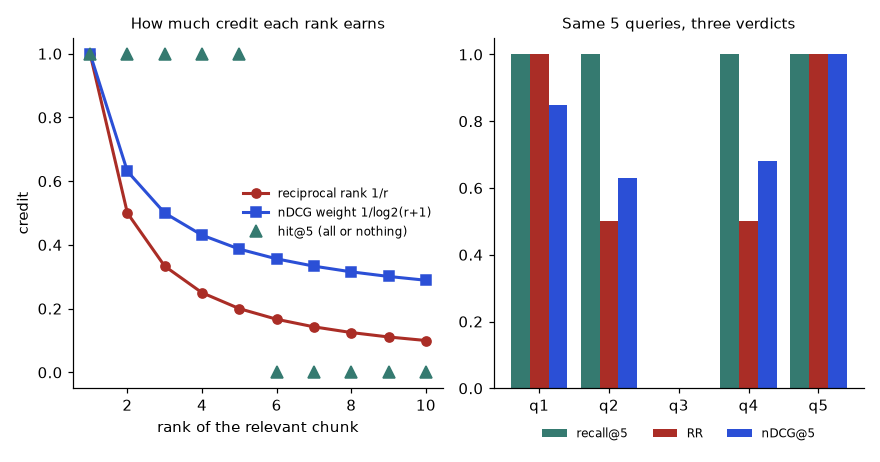
How to read it: on the left, reciprocal rank falls fastest (rank 2 earns 0.5, rank 5 earns 0.2), nDCG falls slowly, and hit@5 is flat until the cut and then drops to zero. On the right, q2 and q4 look perfect by recall but not by RR or nDCG; q3 (nothing retrieved) scores zero on all three.
A recall number measured on n queries has a standard error of about √(p(1 − p)/n). The 95% interval is roughly ± 1.96 times that. Two systems compared on the same queries should be tested with a paired method: count the queries where B beats A and where A beats B (ties ignored) and apply a sign test.
import numpy as np
from scipy.stats import binomtest
# how precise is a recall estimate from n queries?
for n in [20,50,200,1000]:
p=0.80; se=np.sqrt(p*(1-p)/n)
print(f"n={n:>4}: recall 0.80 +/- {1.96*se:.3f} (95% interval {p-1.96*se:.3f} to {p+1.96*se:.3f})")
# system B vs system A on the same 50 queries: B better on 5, worse on 2, same on 43
res=binomtest(5,5+2,0.5) # ties are ignored by the sign test
print("sign test, 5 wins vs 2 losses: p =",round(res.pvalue,3))
res=binomtest(20,20+5,0.5)
print("sign test, 20 wins vs 5 losses: p =",round(res.pvalue,4))n= 20: recall 0.80 +/- 0.175 (95% interval 0.625 to 0.975)
n= 50: recall 0.80 +/- 0.111 (95% interval 0.689 to 0.911)
n= 200: recall 0.80 +/- 0.055 (95% interval 0.745 to 0.855)
n=1000: recall 0.80 +/- 0.025 (95% interval 0.775 to 0.825)
sign test, 5 wins vs 2 losses: p = 0.453
sign test, 20 wins vs 5 losses: p = 0.0041Line by line: (1) For recall 0.80 the half-width of the interval is 0.175 at 20 queries, 0.111 at 50, 0.055 at 200 and 0.025 at 1,000. (2) binomtest(5, 7, 0.5) asks: if A and B were equally good, how likely is a split of 5 wins against 2 losses or more extreme in either direction? The answer, p = 0.453, says that such a split is very ordinary. (3) 20 wins against 5 losses gives p = 0.0041, which is convincing.
Problem 6.9.3 You change the chunk size. On a 50-query test set recall@5 goes from 0.80 to 0.86, with 5 queries improved, 2 worse and 43 unchanged. Should you ship it?
| Interval | With n = 50, a recall of 0.80 has a 95% interval of about 0.69 to 0.91; 0.86 is well inside it. |
|---|---|
| Paired test | Discordant queries: 5 + 2 = 7. Sign test p = 0.453. |
| Answer | Not on this evidence. 0.06 is a 3-query difference (50 × 0.06) and could easily be chance. Collect more labelled queries (a few hundred), and look at the 7 changed queries by eye to see whether the improvement has a plausible mechanism. |
| Check | If the same 7 changes had occurred on 500 queries the recall change would be 0.006, practically nothing. Significance and importance are different questions. |
| Why it matters | Retrieval tuning on tiny test sets produces confident wrong conclusions. Report the interval or the win/loss counts, not just the means. |
Check yourself
Answer: RR = 1/4 = 0.25. nDCG = 1/log25 = 0.4307 (the ideal is 1.0 at rank 1).
Answer: Not necessarily if each query has only 1 or 2 relevant chunks (precision is capped at 0.1 to 0.2). It matters when you pass all 10 chunks to the model, because 8 of 10 are noise.
Answer: Both systems answer the same queries, and a paired test compares them query by query, removing the difference in difficulty between queries.
Memory = vectors (N × d × bytes per number) + graph links (HNSW keeps up to 2M links per node on its bottom layer, each a 4-byte id) + ids and metadata (assume 200 bytes per chunk unless you measured) + headroom (keep 30% free for the operating system, query buffers and growth). Compute it for 50 million chunks of 768 dimensions in four storage formats:
import math
def hnsw_gb(N,d,bytes_per_dim=4.0,M=16,payload_bytes=200):
vec=N*d*bytes_per_dim; links=N*2*M*4 # layer 0 keeps up to 2*M links, 4 bytes (int32) each
meta=N*payload_bytes # id + metadata/payload per chunk
return vec/1e9,links/1e9,meta/1e9
N,d=50_000_000,768
print(f"{'format':22} {'vectors':>8} {'links':>6} {'payload':>8} {'total GB':>9}")
options=[("float32",4.0),("float16",2.0),("int8",1.0),("PQ 96 bytes",96/768)]
for name,b in options:
v,l,m=hnsw_gb(N,d,b)
print(f"{name:22} {v:>8.1f} {l:>6.1f} {m:>8.1f} {v+l+m:>9.1f}")
total=sum(hnsw_gb(N,d,4.0))
ram_node=64*0.7 # a 64 GB machine, keep 30% free for OS and queries
shards=math.ceil(total/ram_node)
print(f"float32 index = {total:.1f} GB -> {shards} shards of 64 GB machines at 70% fill")
qps=2000; per_replica_qps=250 # measured: one shard replica answers 250 QPS at the target latency
replicas=math.ceil(qps/per_replica_qps) # every query visits EVERY shard, so each shard must carry the full 2000 QPS
print(f"{qps} QPS / {per_replica_qps} per replica = {replicas} replicas of each shard -> {shards*replicas} machines in total")format vectors links payload total GB
float32 153.6 6.4 10.0 170.0
float16 76.8 6.4 10.0 93.2
int8 38.4 6.4 10.0 54.8
PQ 96 bytes 4.8 6.4 10.0 21.2
float32 index = 170.0 GB -> 4 shards of 64 GB machines at 70% fill
2000 QPS / 250 per replica = 8 replicas of each shard -> 32 machines in totalLine by line: (1) hnsw_gb returns three numbers in GB: the vectors, the links (N × 2M × 4 bytes), and the payload (N × 200 bytes). (2) The loop prints one row per format: float32 (4 bytes per number), float16 (2), int8 (1) and a 96-byte PQ code (96/768 bytes per number). (3) ram_node is 64 GB × 0.7 usable. shards is the total divided by that, rounded up: 170.0 / 44.8 = 3.8, so 4 shards. (4) For traffic: if one shard replica answers 250 queries per second at the target latency (a number you must measure), then 2,000 queries per second need 2,000 / 250 = 8 replicas of each shard, because every query must visit every shard. Total: 4 × 8 = 32 machines. Compare: the same index in int8 is 54.8 GB, which is 2 shards (54.8 / 44.8 = 1.22, rounded up), so 16 machines for the same traffic, if the recall is acceptable.
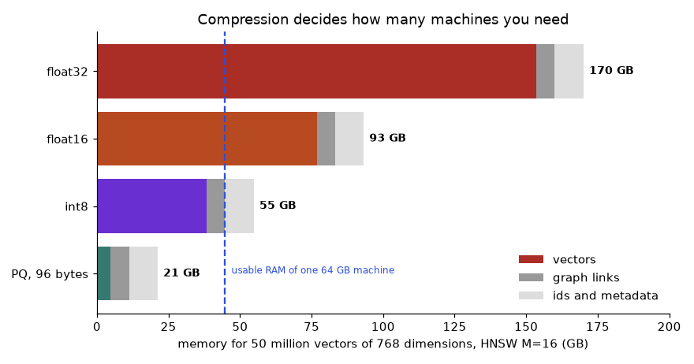
How to read it: each bar is one storage format, split into vectors (coloured), graph links (grey) and ids plus metadata (light grey). The dashed line is the usable RAM of one 64 GB machine. Notice that for the compressed formats the links and metadata, not the vectors, become the largest part: compressing vectors alone stops paying off.
Problem 6.10.1 Size an index: 20 million chunks, 1,024 dimensions, float16 vectors, HNSW with M = 24, 300 bytes of metadata per chunk. How much memory, and how many 32 GB machines (70% usable)?
| Vectors | 20,000,000 × 1,024 × 2 = 40,960,000,000 bytes = 40.96 GB. |
|---|---|
| Links | 20,000,000 × (2 × 24) × 4 = 3,840,000,000 bytes = 3.84 GB. |
| Metadata | 20,000,000 × 300 = 6,000,000,000 bytes = 6.0 GB. |
| Total | 40.96 + 3.84 + 6.0 = 50.8 GB. |
| Machines | Usable per machine: 32 × 0.7 = 22.4 GB. 50.8 / 22.4 = 2.27, so 3 shards. |
| Answer | About 50.8 GB, which needs 3 shards of 32 GB machines (before replicas for traffic or failure). |
| Check | 3 × 22.4 = 67.2 GB of usable space against 50.8 GB needed, leaving 16.4 GB (24%) of headroom for growth. |
| Why it matters | Two replicas for availability would double the machine count to 6; ask the product whether it needs high availability before sizing for it. |
Problem 6.10.2 A shard replica handles 120 queries per second at p95 under 80 ms. You expect a peak of 900 queries per second and have 4 shards. How many machines, and what happens to the latency if you only provide 6 replicas per shard?
| Rule | Every query visits all shards, so each shard must serve the full peak QPS; the replicas of one shard share it. |
|---|---|
| Replicas | 900 / 120 = 7.5, so 8 replicas per shard. |
| Machines | 4 shards × 8 replicas = 32. |
| With 6 replicas | Capacity = 6 × 120 = 720 QPS < 900. Utilisation = 900 / 720 = 125%: queues grow without bound at the peak, so latency rises steeply and requests time out. Even below 100%, high utilisation (above about 70 to 80%) inflates the tail latency. |
| Answer | 8 replicas per shard (32 machines); plan for 70% utilisation at the peak to protect p95, which suggests 900 / (120 × 0.7) = 10.7, so 11 replicas per shard (44 machines). |
| Check | 11 × 120 = 1,320 QPS capacity; 900 / 1,320 = 68%, below 70%. OK. |
| Why it matters | Capacity at the average is a trap; size for the peak with headroom, and load-test with realistic queries and filters. |
If you already run PostgreSQL, the pgvector extension stores the vector as a column and builds HNSW or IVF indexes. This block is not run here (it needs a PostgreSQL server with the extension installed). It shows the pieces you need.
-- NOT RUN HERE: needs PostgreSQL with the pgvector extension
CREATE EXTENSION IF NOT EXISTS vector;
CREATE TABLE chunks (
id bigserial PRIMARY KEY,
doc_id text NOT NULL,
dept text NOT NULL,
year int NOT NULL,
acl_group text NOT NULL,
body text NOT NULL,
embedding vector(768) NOT NULL
);
-- approximate index: cosine distance, graph with M=16, build effort 64
CREATE INDEX chunks_hnsw ON chunks USING hnsw (embedding vector_cosine_ops)
WITH (m = 16, ef_construction = 64);
-- index for the metadata filter
CREATE INDEX chunks_dept_year ON chunks (dept, year);
-- query time effort (higher = better recall, slower)
SET hnsw.ef_search = 100;
-- top 5 for one user: filter and distance in the same statement
SELECT id, doc_id, 1 - (embedding <=> $1) AS cosine
FROM chunks
WHERE dept = 'billing' AND year = 2025 AND acl_group = ANY($2)
ORDER BY embedding <=> $1
LIMIT 5;Explanation: (1) vector(768) is the column type for 768 numbers. (2) vector_cosine_ops builds the index for the cosine distance operator <=> (pgvector also has <-> for L2 and <#> for negative inner product); the query must use the same operator as the index, or the index is ignored. (3) m and ef_construction are the HNSW knobs from Section 6.5; hnsw.ef_search is efSearch. (4) 1 - distance converts cosine distance back to cosine similarity (Problem 6.4.2 style conversion). (5) With a filter, the planner may use the HNSW index and then filter, which can return fewer than 5 rows for a narrow filter (the post-filter problem of Section 6.6); newer pgvector versions offer an iterative scan setting for that, and for very narrow filters the planner may prefer the (dept, year) index and an exact scan of the subset. Expected result: up to 5 rows of (id, doc_id, cosine), highest cosine first. Always run EXPLAIN ANALYZE on the real query to see which index is used.
A dedicated vector database call looks like this (also not run here, it needs the qdrant-client package and, for production, a Qdrant server; the in-memory mode shown works without a server):
# NOT RUN HERE: shape of a filtered vector query with the qdrant-client package
from qdrant_client import QdrantClient, models
client = QdrantClient(":memory:") # local, in-process; use a URL for a server
client.create_collection(
"chunks",
vectors_config=models.VectorParams(size=768, distance=models.Distance.COSINE),
)
client.upsert("chunks", points=[
models.PointStruct(id=1, vector=vec_1, payload={"dept": "billing", "year": 2025}),
])
hits = client.query_points(
"chunks",
query=query_vector,
query_filter=models.Filter(must=[
models.FieldCondition(key="dept", match=models.MatchValue(value="billing")),
]),
limit=5,
).points
for h in hits:
print(h.id, round(h.score, 3), h.payload)Explanation: (1) VectorParams declares the size and the metric; the metric must match how the embedding model was trained. (2) Each point carries an id, the vector and a payload of metadata. (3) query_filter is applied inside the search (a pre-filter in the sense of Section 6.6). (4) limit=5 is k. Expected output: up to five lines such as 1 0.83 {'dept': 'billing', 'year': 2025} (id, cosine score, payload), best first; the numbers depend on your vectors.
Problem 6.10.3 You will switch from embedding model A to B for 50 million chunks of about 400 tokens. Estimate cost and time with a hypothetical price of $0.02 per million tokens and a pipeline that embeds 1,000 chunks per second.
# Cost and time to re-embed a corpus when you change the embedding model (prices are HYPOTHETICAL)
chunks=50_000_000; tokens_per_chunk=400
price_per_million=0.02 # dollars per million tokens, hypothetical
throughput=1000 # chunks embedded per second by your pipeline, measured
total_tokens=chunks*tokens_per_chunk
cost=total_tokens/1e6*price_per_million
seconds=chunks/throughput
print(f"tokens to embed : {total_tokens:,}")
print(f"API cost : ${cost:,.0f}")
print(f"time : {seconds:,.0f} s = {seconds/3600:.1f} hours = {seconds/86400:.2f} days")
print(f"extra storage during the switch (old + new index, 768-d float32 vectors only): {2*chunks*768*4/1e9:.1f} GB")tokens to embed : 20,000,000,000
API cost : $400
time : 50,000 s = 13.9 hours = 0.58 days
extra storage during the switch (old + new index, 768-d float32 vectors only): 307.2 GB| Tokens | 50,000,000 × 400 = 20,000,000,000 (20 billion). |
|---|---|
| Cost | 20,000 million tokens × $0.02 per million = $400. |
| Time | 50,000,000 / 1,000 = 50,000 seconds = 13.9 hours. |
| Storage | Two indexes in parallel need 2 × 50,000,000 × 768 × 4 = 307.2 GB for vectors alone. |
| Answer | About $400 and 14 hours for the embedding job (price is illustrative: check your provider), plus roughly double the storage during the switch. |
| Check | The code printed the same four numbers. A tenfold faster pipeline (10,000 chunks per second) brings the time to 1.4 hours, the cost stays $400. |
| Why it matters | The embedding model is the most expensive thing to change later; the cost of the job is small, the cost of the evaluation, the dual storage and the migration risk is not. |
Check yourself
Answer: 10,000,000 × 384 × 4 = 15.36 GB.
Answer: 5 replicas per shard, so 15 machines.
Answer: Vectors from different models are not comparable; the name lets you detect and prevent mixed indexes and manage migrations.
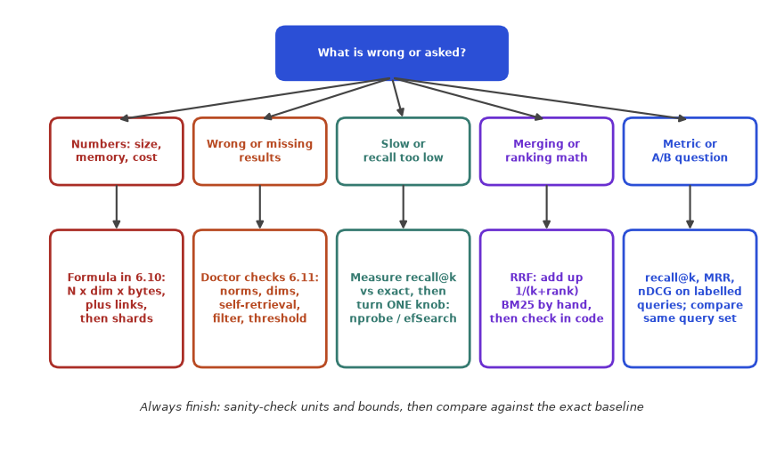
How to read it: start at the top box and pick the branch that matches the sentence of the problem. The box under it names the method and the section of this chapter where it is worked. The last line applies to all branches: check the answer before you trust it.
Pattern 1: Sizing and capacity. Recognise it by: "how much memory / how many machines / what does it cost". Method: bytes per vector × N, plus links and metadata, divide by usable RAM, then replicas = peak QPS / QPS per replica. The block below is a calculator you can reuse.
def hnsw_memory_gb(n, dim, bytes_per_number, m, meta_bytes):
vectors = n * dim * bytes_per_number
links = n * 2 * m * 4
meta = n * meta_bytes
return (vectors + links + meta) / 1e9
print(round(hnsw_memory_gb(5_000_000, 1536, 4, 32, 250), 2), "GB")
print(round(hnsw_memory_gb(5_000_000, 1536, 1, 32, 250), 2), "GB with int8")33.25 GB
10.21 GB with int8Problem 6.11.1 A startup has 5 million chunks from a 1,536-dimension embedding model (float32), uses HNSW with M = 32 and 250 bytes of metadata per chunk. Memory? Would int8 make it fit a 16 GB machine (70% usable)?
| Vectors | 5,000,000 × 1,536 × 4 = 30.72 GB. |
|---|---|
| Links | 5,000,000 × (2 × 32) × 4 = 1.28 GB. |
| Metadata | 5,000,000 × 250 = 1.25 GB. |
| Total | 33.25 GB (the code printed 33.25). |
| int8 | Vectors 7.68 GB; total 7.68 + 1.28 + 1.25 = 10.21 GB. |
| Answer | 33.25 GB in float32. int8 gives 10.21 GB, but a 16 GB machine has only 16 × 0.7 = 11.2 GB usable, so it fits with just 1 GB (9%) to spare. Fits, but with no room to grow: pick a 32 GB machine or lower M. |
| Check | Vectors dominate (92% in float32); 33.25 / 10.21 = 3.26, near the 4 times saving on vectors diluted by the unchanged links and metadata. |
Pattern 2: Tune a knob to a target. Recognise it by: "recall is too low", "queries are too slow", "choose efSearch / nprobe". Method: fix the target (recall ≥ X and latency ≤ Y) on real queries, measure a table of knob values, take the cheapest setting that meets both. If none does, the knob is not the answer: change the structure (index type, compression with rescoring, more shards).
Problem 6.11.2 Measured on your data: efSearch 32 gives recall 0.88 at p95 8 ms; 64 gives 0.94 at 12 ms; 128 gives 0.975 at 21 ms; 256 gives 0.989 at 40 ms. Requirement A: recall ≥ 0.97 and p95 ≤ 25 ms. Requirement B: recall ≥ 0.99 and p95 ≤ 25 ms.
| Requirement A | Settings with recall ≥ 0.97: 128 and 256. Of these, p95 ≤ 25 ms leaves only 128 (21 ms). |
|---|---|
| Answer A | efSearch = 128 (recall 0.975, 21 ms, 4 ms of headroom). |
| Requirement B | Recall ≥ 0.99: even 256 (0.989) misses, and it also breaks the latency (40 ms). |
| Answer B | No setting satisfies B. Change structure: HNSW with larger M and efConstruction (rebuild), or add a rescoring stage, or shard to cut per-shard latency, or relax the target to 0.98. |
| Check | Both columns rise with efSearch (recall 0.88, 0.94, 0.975, 0.989; latency 8, 12, 21, 40): monotone, as expected. Latency roughly doubles for the last step but recall improves only by 0.014: diminishing returns. |
Pattern 3: Compute a score or a merge by hand. Recognise it by: "what is the cosine / BM25 / RRF score / which ranks first". Method: write the formula, plug numbers in a table, compute each term, then reproduce with a few lines of code. Variants: weighted fusion, ties.
Problem 6.11.3 BM25 list = [a, b, c, d]; vector list = [c, a, e, b]. Compute RRF with k = 60 with equal weights, then with the BM25 contribution doubled. Does the order change?
def rrf(lists, weights, k=60):
score = {}
for lst, w in zip(lists, weights):
for pos, doc in enumerate(lst, 1):
score[doc] = score.get(doc, 0) + w / (k + pos)
return sorted(score.items(), key=lambda x: -x[1])
bm25 = ["a", "b", "c", "d"]
vec = ["c", "a", "e", "b"]
print("equal weights :", [(d, round(s, 5)) for d, s in rrf([bm25, vec], [1, 1])])
print("BM25 weight 2 :", [(d, round(s, 5)) for d, s in rrf([bm25, vec], [2, 1])])equal weights : [('a', 0.03252), ('c', 0.03227), ('b', 0.03175), ('e', 0.01587), ('d', 0.01562)]
BM25 weight 2 : [('a', 0.04892), ('c', 0.04814), ('b', 0.04788), ('d', 0.03125), ('e', 0.01587)]| Equal weights | a: 1/61 + 1/62 = 0.016393 + 0.016129 = 0.032522. c: 1/63 + 1/61 = 0.015873 + 0.016393 = 0.032266. b: 1/62 + 1/64 = 0.016129 + 0.015625 = 0.031754. e: 1/63 = 0.015873. d: 1/64 = 0.015625. |
|---|---|
| Order 1 | a, c, b, e, d. |
| BM25 doubled | a: 2/61 + 1/62 = 0.032787 + 0.016129 = 0.048916. c: 2/63 + 1/61 = 0.031746 + 0.016393 = 0.048139. b: 2/62 + 1/64 = 0.032258 + 0.015625 = 0.047883. d: 2/64 = 0.03125. e: 1/63 = 0.015873. |
| Order 2 | a, c, b, d, e. |
| Answer | The top three stay a, c, b. The change is below them: d (found only by BM25) moves above e (found only by vectors), because BM25 now counts double. |
| Check | Matches the code: 0.03252, 0.03227, 0.03175, 0.01587, 0.01562 and 0.04892, 0.04814, 0.04788, 0.03125, 0.01587. |
Pattern 4: Missing or wrong results (diagnosis). Recognise it by: "the right document is never returned", "results are random", "works in the demo, fails in production". Method: bisect the pipeline. Is the chunk present, is it embedded with the same model and metric, is the index returning what exact search would, is a filter or threshold removing it, is the tokenizer destroying the term? The function below runs the cheap structural checks first. It tests a healthy index and a deliberately broken one, then the repaired one.
import numpy as np
def doctor(X,Q=None,expected_dim=None,sample=200,seed=0):
"""Cheap sanity checks to run BEFORE blaming the index or the model."""
rng=np.random.default_rng(seed); report=[]
if expected_dim and X.shape[1]!=expected_dim: report.append(f"FAIL dimension {X.shape[1]} != expected {expected_dim}")
if not np.isfinite(X).all(): report.append("FAIL NaN or inf in vectors")
norms=np.linalg.norm(X,axis=1)
if norms.min()==0: report.append(f"FAIL {(norms==0).sum()} zero vectors (empty text?)")
if norms.max()-norms.min()>1e-3: report.append(f"WARN norms range {norms.min():.2f}..{norms.max():.2f}: normalise if you use dot product as cosine")
ids=rng.choice(len(X),min(sample,len(X)),replace=False)
S=X[ids]@X.T; self_rank1=np.mean(S.argmax(axis=1)==ids)
if self_rank1<0.99: report.append(f"FAIL self-retrieval: only {self_rank1:.0%} of stored vectors find themselves first")
uniq=len({row.tobytes() for row in X})
if uniq<len(X): report.append(f"WARN {len(X)-uniq} exact duplicate vectors")
if Q is not None and Q.shape[1]!=X.shape[1]: report.append("FAIL query dim differs from index dim")
return report or ["all checks passed"]
rng=np.random.default_rng(1)
good=rng.normal(size=(500,32)); good/=np.linalg.norm(good,axis=1,keepdims=True)
print("healthy index:",doctor(good,expected_dim=32))
bad=rng.normal(size=(500,32))*rng.uniform(0.5,4,size=(500,1)) # not normalised
bad[10]=0; bad[20]=bad[21] # an empty-text vector and a duplicate
bad[30,3]=np.nan
print("broken index:")
for line in doctor(np.nan_to_num(bad),expected_dim=32): print(" ",line)
# the fix: drop empty vectors, normalise, remove duplicates, then run the checks again
fixed=np.nan_to_num(bad)
fixed=fixed[np.linalg.norm(fixed,axis=1)>0]
fixed=fixed/np.linalg.norm(fixed,axis=1,keepdims=True)
fixed=np.unique(fixed,axis=0)
print("after the fix:",doctor(fixed,expected_dim=32))healthy index: ['all checks passed']
broken index:
FAIL 1 zero vectors (empty text?)
WARN norms range 0.00..27.38: normalise if you use dot product as cosine
FAIL self-retrieval: only 68% of stored vectors find themselves first
WARN 1 exact duplicate vectors
after the fix: ['all checks passed']Line by line: (1) doctor checks the dimension against what you expect, NaN or infinite values, zero vectors (an empty chunk), the range of vector lengths (non-unit vectors make dot product different from cosine), duplicates, and the key test: take 200 stored vectors as queries and verify that each finds itself at rank 1. (2) The healthy index (random unit vectors) passes. (3) The broken index has random lengths, an all-zero row, a duplicate row and a NaN: four findings, including that only 68% of vectors find themselves first with dot product, because a long vector elsewhere outscores the vector itself. (4) After dropping empty rows, normalising and removing duplicates, the checks pass.
Problem 6.11.4 Users report that searching for the exact title of a document does not return that document at rank 1. Your index is dot-product based. Which checks do you run, in order, and what do the doctor results above tell you?
| Step 1 | Self-retrieval: embed the stored chunk text as a query. It should return itself first. The doctor shows only 68% do on the broken data. |
|---|---|
| Step 2 | Norms: range 0.00 to 27.38 means vectors have very different lengths; with dot product, long vectors beat the exact match. |
| Step 3 | Fix: normalise at ingestion (or switch the index metric to cosine), rebuild, re-run the check (it prints "all checks passed"). |
| Step 4 | If self-retrieval passes but title search still fails, compare with exact search to rule out the index, then inspect tokenization of the keyword leg and chunk boundaries (the title may sit in a different chunk). |
| Answer | Most likely cause: un-normalised vectors with an inner-product index. Evidence: failed self-retrieval and a wide norm range. |
| Check | After the fix, the self-retrieval rate should be 100% (or above 99% for an ANN index). |
Pattern 5: Latency budget and funnel design. Recognise it by: "end-to-end must be under X ms", "how many candidates to rerank". Method: list the stages, mark which can run in parallel (take the maximum), add the serial ones, spend the leftover on the reranker, check the p95 not the mean.
Problem 6.11.5 A retrieval budget of 250 ms at p95. Embedding 25 ms; vector search 30 ms in parallel with BM25 15 ms; merge 2 ms; reranker 400 pairs per second. Maximum depth, and a safe depth with 20% headroom on the rerank stage?
| Fixed | 25 + max(30, 15) + 2 = 57 ms. |
|---|---|
| Left | 250 − 57 = 193 ms. |
| Max depth | 0.193 s × 400 pairs/s = 77.2, so 77 pairs. |
| Safe depth | Use 80% of the leftover: 0.8 × 193 = 154.4 ms → 61.8, so 60 pairs (150 ms). |
| Answer | Hard maximum 77; choose 60 for headroom (total 57 + 150 = 207 ms). |
| Check | 60 pairs / 400 per second = 0.15 s = 150 ms. 207 ms is inside 250 ms with 43 ms spare. |
Pattern 6: Evaluate a change. Recognise it by: "did the new chunking / embedding / reranker help?" Method: same labelled queries for both, per-query metric, mean difference, win/loss counts, sign test, look at the changed queries.
from scipy.stats import binomtest
# rank of the right chunk for 8 queries (0 = not retrieved in the top 10)
a = [1, 2, 1, 5, 1, 3, 1, 0]
b = [1, 1, 1, 2, 1, 2, 2, 4]
rr = lambda ranks: [0 if r == 0 else 1 / r for r in ranks]
mrr_a = sum(rr(a)) / len(a); mrr_b = sum(rr(b)) / len(b)
wins = sum(rb > ra for ra, rb in zip(rr(a), rr(b)))
losses = sum(rb < ra for ra, rb in zip(rr(a), rr(b)))
print(f"MRR A={mrr_a:.3f} B={mrr_b:.3f} difference={mrr_b-mrr_a:+.3f}")
print(f"B better on {wins} queries, worse on {losses}, tied on {len(a)-wins-losses}")
print("sign test p =", round(binomtest(wins, wins + losses, 0.5).pvalue, 3))MRR A=0.629 B=0.719 difference=+0.090
B better on 4 queries, worse on 1, tied on 3
sign test p = 0.375Problem 6.11.6 Two systems are compared on 8 queries (ranks of the right chunk above; 0 means not in the top 10). B has the higher MRR. Do you switch?
| Reciprocal ranks A | 1, 0.5, 1, 0.2, 1, 0.333, 1, 0 → sum 5.033, MRR = 5.033 / 8 = 0.629. |
|---|---|
| Reciprocal ranks B | 1, 1, 1, 0.5, 1, 0.5, 0.5, 0.25 → sum 5.75, MRR = 0.719. |
| Per query | B better on queries 2, 4, 6, 8 (4 wins); worse on query 7 (1 loss); tied on 1, 3, 5. |
| Sign test | 4 wins out of 5 decisive queries: p = 2 × (5 + 1) / 32 = 0.375. |
| Answer | Not yet. +0.09 MRR looks good but 8 queries cannot separate it from luck. Note also that B fixed the query that A missed completely (query 8, rank 4 versus not found), which is worth a look, and that B is worse on query 7. Gather more queries before deciding. |
| Check | The code printed 0.629, 0.719, 4 wins, 1 loss, 3 ties, p = 0.375. |
Pattern 7: Choose a design and defend it (interview style). Recognise it by: "which database / index would you use for X". Method: size it (Pattern 1), state the access pattern (filters, update rate, QPS, latency), pick the simplest option that meets it, and name what would make you change your mind.
Problem 6.11.7 A SaaS product has 8 million chunks of 768 dimensions (float32), a per-tenant filter on every query, peak 20 QPS, a three-person team that already runs PostgreSQL. What do you recommend?
| Size | Vectors 8,000,000 × 768 × 4 = 24.58 GB. HNSW links with M = 16: 8,000,000 × 32 × 4 = 1.02 GB. Metadata at 200 bytes: 1.6 GB. Total about 27.2 GB. |
|---|---|
| Traffic | 20 QPS is low; one replica of a modest machine can serve it. |
| Filter | A tenant filter is usually selective for each tenant, so test the pre-filter behaviour with the largest and the smallest tenant (Section 6.6): a tenant with 0.1% of the rows should be served by an exact scan of its subset. |
| Recommendation | pgvector in the existing PostgreSQL on a machine with 64 GB RAM: one system, transactional updates, SQL filters and joins, no new operations burden. Index with HNSW (m = 16), set ef_search from a recall measurement. Partition or index by tenant for very large tenants. |
| Change my mind if | The corpus grows beyond about 50 million vectors, the p95 target cannot be met after tuning, filters are complex and selective across many fields, or the load grows 10 times: then evaluate a dedicated vector database. |
| Check | 27.2 GB fits comfortably into a 64 GB machine with 70% usable (44.8 GB), 39% headroom. |
Check yourself
Answer: Pattern 2, tune a knob to a target: measure a table of settings and take the cheapest one meeting both limits.
Answer: Not in the index. Look at the embedding model, chunking, the query wording, or whether the chunk exists.
Answer: Recompute by hand with N × d × bytes: a factor of 10 usually means a units or dimension mistake in one of them.
This part is for when you must explain not only how to use an index but why it behaves as it does. Skip it on a first reading; return before an interview or a design review.
Layers. When a vector is inserted it draws a random top layer: level = floor(−ln(U) × mL), where U is uniform between 0 and 1 and mL = 1/ln(M). This makes the chance of reaching layer l or higher equal to M−l, so each layer holds about 1/M of the nodes of the layer below. With M = 16 about 6.25% of nodes are in layer 1 or higher, 0.39% in layer 2 or higher, and so on. The expected number of layers is about logM(N). Verify by simulation:
import numpy as np
rng=np.random.default_rng(0)
M=16; ml=1/np.log(M) # level multiplier used by HNSW
N=1_000_000
level=np.floor(-np.log(1-rng.random(N))*ml).astype(int) # level = floor(-ln(U) * ml)
for l in range(5):
print(f"layer >= {l}: {np.mean(level>=l):.6f} of nodes (theory M^-{l} = {M**-l:.6f}) = {np.sum(level>=l):,} nodes")
print("highest layer used:",level.max())layer >= 0: 1.000000 of nodes (theory M^-0 = 1.000000) = 1,000,000 nodes
layer >= 1: 0.062675 of nodes (theory M^-1 = 0.062500) = 62,675 nodes
layer >= 2: 0.004005 of nodes (theory M^-2 = 0.003906) = 4,005 nodes
layer >= 3: 0.000270 of nodes (theory M^-3 = 0.000244) = 270 nodes
layer >= 4: 0.000015 of nodes (theory M^-4 = 0.000015) = 15 nodes
highest layer used: 5Line by line: (1) ml is 1/ln(M). (2) 1 - rng.random(N) is a uniform number in (0, 1]; taking -np.log of it gives an exponentially distributed value, multiplied by ml and floored to an integer level. (3) The loop prints the share of nodes with level at least l next to the theory M−l: 0.062675 versus 0.0625, 0.004005 versus 0.003906, and so on. The highest layer for one million nodes was 5, matching log16(1,000,000) = 4.98. Few nodes in the top layers means the "highway" has few exits, and a search from the single entry point needs only a few long hops before dropping to dense layers.
Problem 6.12.1 A collection has 10 million vectors and M = 16. Estimate how many nodes are in layer 1 or higher, in layer 2 or higher, and the expected number of layers.
| Formula | Nodes at level ≥ l: N × M−l. Layers ≈ logM(N) = ln N / ln M. |
|---|---|
| Layer ≥ 1 | 10,000,000 / 16 = 625,000. |
| Layer ≥ 2 | 10,000,000 / 256 = 39,062.5, about 39,063. |
| Layers | ln(10,000,000) = 16.118; ln 16 = 2.7726; ratio = 5.81, so the top layer is around 5 or 6. |
| Answer | About 625,000 and 39,063 nodes; roughly 6 layers in total. |
| Check | The simulation above with 1,000,000 nodes had 62,675 in layer 1 or higher, consistent with 1,000,000 / 16 = 62,500. |
Links and memory. The bottom layer keeps up to 2M links per node, upper layers up to M. The memory estimate in Section 6.10 used 2M × 4 bytes per node; upper layers add only a few percent more (about 1/(2(M − 1)), which is 3.3% for M = 16). Build. To insert a vector, search the existing graph with beam size efConstruction to find candidate neighbours, then keep M of them. A larger efConstruction builds a better graph (higher recall at the same efSearch) and takes longer to build; it costs nothing at query time. Neighbour selection heuristic. Production HNSW does not simply keep the M closest nodes: it keeps a candidate only if it is closer to the new node than to any neighbour already kept. In a cluster of near-duplicates this keeps one representative and leaves link slots for connections to other clusters, which is what prevents the graph from splitting into isolated islands. The simple nearest-neighbour graph in Section 6.5 does not have this property.
Complexity. Search cost grows roughly with log N hops times the work per hop (efSearch candidates, each with up to 2M links), so doubling the data adds a small constant, not double the time. Recall at a fixed efSearch drops slowly as N grows, so re-measure after the corpus grows 10 times.
When vectors do not fit in RAM, graph indexes designed for SSD (DiskANN is the best known) keep compressed vectors in memory to guide the walk and read the full vectors and neighbour lists from disk in pages. Latency is dominated by the number of random reads: if one read costs about 100 microseconds and a search needs 40 reads, that is already 4 ms, so these designs aim at a few reads per query. The design question to ask is "what is the number of random disk reads per query?"
Four families, which Section 6.6 measured in simplified form: (1) post-filter; (2) pre-filter followed by exact scan, optimal for very selective filters; (3) filter-aware graph traversal, optimal for medium selectivity, where nodes that fail the filter are still traversed but never returned (otherwise the graph can become disconnected for the allowed subset); (4) partitioning by a high-cardinality field such as tenant, one index per tenant (or per group of tenants), so the filter becomes routing. Planners estimate the selectivity from statistics on the metadata and choose among them. Ask any vendor what happens at 0.1% selectivity.
Problem 6.12.2 Five candidates have relevance to the query 0.90, 0.88, 0.70, 0.65, 0.60 (d1 to d5). d1 and d2 are near duplicates (similarity 0.95); other pairwise similarities are between 0.10 and 0.40. Choose 3 with MMR, λ = 0.7.
import numpy as np
# relevance of 5 candidates to the query, and how similar candidates are to each other
rel = np.array([0.90, 0.88, 0.70, 0.65, 0.60])
sim = np.array([[1.00, 0.95, 0.20, 0.30, 0.10],
[0.95, 1.00, 0.25, 0.10, 0.10],
[0.20, 0.25, 1.00, 0.40, 0.10],
[0.30, 0.10, 0.40, 1.00, 0.10],
[0.10, 0.10, 0.10, 0.10, 1.00]])
def mmr(lam, k=3):
chosen = []
while len(chosen) < k:
best, best_score = None, -9
for i in range(len(rel)):
if i in chosen: continue
penalty = max(sim[i][j] for j in chosen) if chosen else 0.0
score = lam * rel[i] - (1 - lam) * penalty
if score > best_score: best, best_score = i, score
chosen.append(best)
print(f" lambda={lam}: pick d{best+1} (score {best_score:.3f})")
return [f"d{i+1}" for i in chosen]
print("plain top 3 by relevance:", [f"d{i+1}" for i in np.argsort(-rel)[:3]])
print("MMR result:", mmr(0.7))plain top 3 by relevance: ['d1', 'd2', 'd3']
lambda=0.7: pick d1 (score 0.630)
lambda=0.7: pick d3 (score 0.430)
lambda=0.7: pick d5 (score 0.390)
MMR result: ['d1', 'd3', 'd5']| Round 1 | Nothing chosen yet, penalty 0. Scores are 0.7 × relevance: d1 = 0.630 is highest. Pick d1. |
|---|---|
| Round 2 | d2: 0.7 × 0.88 − 0.3 × 0.95 = 0.616 − 0.285 = 0.331. d3: 0.7 × 0.70 − 0.3 × 0.20 = 0.490 − 0.060 = 0.430. d4: 0.455 − 0.3 × 0.30 = 0.365. d5: 0.420 − 0.3 × 0.10 = 0.390. Pick d3 (0.430). |
| Round 3 | Chosen = {d1, d3}. d2: 0.616 − 0.3 × max(0.95, 0.25) = 0.331. d4: 0.455 − 0.3 × max(0.30, 0.40) = 0.335. d5: 0.420 − 0.3 × 0.10 = 0.390. Pick d5. |
| Answer | MMR returns d1, d3, d5. Plain top 3 would return d1, d2, d3: the near-duplicate d2 is dropped. |
| Check | The code printed picks d1 (0.630), d3 (0.430), d5 (0.390). With λ = 1 MMR reduces to the plain relevance ranking; with λ small it favours diversity. |
| Why it matters | For RAG, five paraphrases of one paragraph waste prompt space; diversity helps when the question needs several facts. |
Index recall counts any difference from the exact top k. Many misses are neighbours at the bottom of the top k that would barely have changed the answer, and the exact top k itself is only a proxy for relevance. Conversely, a miss on the one chunk that held the answer is a complete failure. The right measure is end-to-end: retrieval recall on labelled questions (Section 6.9) and answer correctness (Chapter 8) at several index settings. Often there is a plateau where more index recall stops improving answers, and that is the setting to ship.
| Question | Strong answer in brief |
|---|---|
| Why not always use brute force? | Cost N × d per query and bytes read per query; fine below about 100k vectors or for batch jobs, too slow and too memory-hungry at tens of millions with strict latency. |
| HNSW or IVF? | HNSW: high recall at low latency, more memory, supports incremental inserts. IVF: smaller, simple, good with PQ for very large data, centroids need retraining. Measure both on your data at your recall target. |
| What does efSearch do? | Sets the beam width at the bottom layer: more candidates kept alive, higher recall, roughly proportional extra latency. |
| How do you handle a filter that keeps 0.1% of data? | Pre-filter and scan the matching subset exactly, or partition by that field. A post-filter would return nothing; graph traversal with filtering degenerates to a full scan. |
| Why RRF and not score addition? | Scores from different retrievers are on different scales and distributions; ranks are comparable and need no calibration. Weighted score fusion can win when you have labelled data to tune it. |
| How do you know the index is good? | Recall@k against exact search on a sample of real queries (index quality) and retrieval metrics on labelled questions (system quality), plus latency percentiles at target QPS. |
| How do you roll out a new embedding model? | Build a new index beside the old one, evaluate on the same labelled queries, shadow traffic, switch, keep the old index for rollback. Never mix model versions in one index. |
| How would you cut memory by 4 times? | int8 scalar quantization (about 4 times on vectors) with an optional rescore; or PQ for more at larger recall cost; or Matryoshka truncation if the model supports it. State the recall you measured. |
Ten minutes, no notes first. The questions are mixed on purpose: in real work nobody tells you which section a problem belongs to. Write your answer, then compare. If you miss one, the section in brackets is where to reread.
Drill 1 2 million vectors, 512 dimensions, float16. Memory for the vectors alone? Answer: 2,000,000 × 512 × 2 = 2,048,000,000 bytes = 2.048 GB. [6.4, 6.10]
Drill 2 IVF with N = 8 million, nlist = 2,000, nprobe = 16. Distance computations per query and share of brute force? Answer: list size = 8,000,000 / 2,000 = 4,000; work = 2,000 + 16 × 4,000 = 66,000; share = 66,000 / 8,000,000 = 0.825%. [6.5]
Drill 3 RRF with k = 60: a chunk is rank 3 in list A and rank 10 in list B. Score? Answer: 1/63 + 1/70 = 0.015873 + 0.014286 = 0.030159. [6.7]
Drill 4 Cosine of (1, 1, 0) and (0, 1, 1)? Answer: dot = 0 + 1 + 0 = 1; lengths √2 and √2, product 2; cosine = 1/2 = 0.5. [6.4]
Drill 5 Two unit vectors are 0.6 apart in L2 distance. Cosine? Answer: cos = 1 − 0.62/2 = 1 − 0.18 = 0.82. [6.4]
Drill 6 Recall@10 = 0.93 over 500 queries. How many true neighbours were missed? Answer: total = 500 × 10 = 5,000; found = 4,650; missed = 350. [6.2, 6.5]
Drill 7 (find the bug) A developer computes scores = M @ q on raw model outputs and calls the result cosine. Long chunks dominate the results. What is wrong, and what is the minimal fix? Answer: the dot product of un-normalised vectors is not cosine; it grows with vector length. Normalise M rows and q to length 1 (or divide by the norms), and run the self-retrieval check. [6.4, 6.11]
Drill 8 Ranks of the right chunk for four queries: 1, 3, not found, 2. MRR? Answer: (1 + 1/3 + 0 + 1/2) / 4 = 1.8333 / 4 = 0.4583. [6.9]
Drill 9 A post-filter keeps 4% of chunks. You fetch 50 before filtering. Expected survivors, and the fetch size to expect 10? Answer: 50 × 0.04 = 2 survivors. For 10: 10 / 0.04 = 250 (use more, about 500, because of variance). [6.6]
Drill 10 20 million vectors of 1,024 dimensions, float32, compressed with PQ to 64 bytes. Compression ratio and memory before and after? Answer: 4,096 bytes → 64 bytes is 64 times. 20,000,000 × 4,096 = 81.92 GB before; 20,000,000 × 64 = 1.28 GB after (codes only, not counting ids and structure). [6.5]
Drill 11 Budget 250 ms p95. Embedding 40 ms; vector search 35 ms in parallel with BM25 20 ms; merge 3 ms; reranker 300 pairs per second. Maximum rerank depth? Answer: fixed = 40 + 35 + 3 = 78 ms; left = 172 ms; 0.172 × 300 = 51.6, so 51 pairs. [6.8, 6.11]
Drill 12 A user types "how do I get my money back" and a BM25-only system returns nothing relevant, although a chunk titled "Refund policy" exists. Why, and what do you add? Answer: no shared words ("money back" versus "refund"). Add dense (embedding) retrieval and merge with BM25 by RRF; a synonym list is a weaker alternative. [6.7]
Drill 13 The only relevant chunk is at rank 3. nDCG@10? Answer: DCG = 1/log2(3 + 1) = 1/2 = 0.5; ideal = 1; nDCG = 0.5. [6.9]
Drill 14 System B beats A on 9 queries and loses on 1 (others tied). Sign test p-value? Answer: two-sided p = 2 × (10 + 1) / 1,024 = 0.0215, so the difference is unlikely to be chance. [6.9]
Drill 15 Exact search returns the right chunk at rank 2; the HNSW index returns it at rank 14. What do you change, and in which direction? Answer: the index is losing recall: raise efSearch (query time), and if that is too slow, rebuild with higher M and efConstruction. Re-measure recall@k against exact search. [6.5, 6.11]
Sixteen questions, one point each. Do them on paper, without the chapter, in about 25 minutes. Answers follow the last question.
Answers. 1: cos = 1 − 0.42/2 = 0.92. 2: 20,000,000 × 1,024 × 4 = 81.92 GB; 81.92 / 50 = 1.64 s. 3: list size 9,000,000 / 3,000 = 3,000; 3,000 + 10 × 3,000 = 33,000. 4: a local optimum; raise efSearch (the beam size). 5: 512 × 4 = 2,048 bytes versus 32 bytes = 64 times. 6: 50 × 0.01 = 0.5. 7: pre-filter and scan the tenant's chunks exactly (or a per-tenant partition): graph search with such a narrow filter degenerates to a full scan, and a post-filter returns nothing. 8: 1/61 + 1/64 = 0.016393 + 0.015625 = 0.032018. 9: how fast repeating a word saturates: higher k1 lets repeated occurrences keep adding score for longer. 10: 0.90, the reranker cannot recover chunks that stage 1 did not return. 11: 768 / 8 = 96 bytes. 12: RR = 1/5 = 0.2; nDCG = 1/log26 = 0.387. 13: 1.96 × √(0.9 × 0.1 / 200) = 1.96 × 0.0212 = ±0.042. 14: every shard needs 1,200 / 300 = 4 replicas, so 4 × 4 = 16 machines. 15: raise efSearch or nprobe (and rebuild with better parameters if too slow), measuring recall@k against exact search. 16: the plain relevance ranking (no diversity penalty).
| Score | What it means | What to reread |
|---|---|---|
| 14 to 16 | Interview-ready on mechanics | Go to Section 6.12 and the Prompt pack mock interview; then Chapter 7 (RAG end to end) |
| 11 to 13 | Solid; a few gaps | Reread the sections of the questions you missed, then redo the drill (6.13) |
| 7 to 10 | You know the vocabulary but not the arithmetic | Redo the worked problems of 6.4, 6.5 and 6.9 with the steps tables covered; run each code block |
| 0 to 6 | The foundations need another pass | Reread 6.1 to 6.5 in order, with a pencil, then the playbook 6.11 |
Questions 1 to 2 map to Section 6.4; 3 to 5 to 6.5; 6 to 7 to 6.6; 8 to 9 to 6.7; 10 to 11 to 6.8; 12 to 13 to 6.9; 14 to 6.10; 15 to 6.11; 16 to 6.12. A miss on a question is a reason to reread only that section.
Where to go next. Chapter 7 uses the retriever you built here inside a full RAG pipeline: chunking, prompt assembly, citations and failure modes. Chapter 8 shows how to evaluate the whole system, including answer quality, building on the retrieval metrics of Section 6.9. Chapter 5 (before this chapter) covers the model API calls whose cost and latency add to the retrieval budget of Section 6.11. Chapter 2 is the place to revisit embeddings and similarity if Section 6.4 felt fast.
refund versus refunds showed how a zero score hides in plain sight (Section 6.1).nprobe clusters; HNSW walks a layered graph with a beam of efSearch candidates; PQ stores short codes and needs rescoring with full vectors. Harder (more overlapping) data needs more work for the same recall: the demo recall is not your recall (Section 6.5).| Pattern | Formula or code |
|---|---|
| Cosine for all docs | scores = M @ q (unit-length rows and unit query) |
| Unit vectors: cosine from L2 | cos = 1 − L22 / 2 |
| Vector memory | N × dim × bytes (float32 4, float16 2, int8 1, binary 1/8) |
| HNSW memory | vectors + N × 2M × 4 (links) + N × metadata bytes |
| IVF work per query | nlist + nprobe × N / nlist distance computations |
| PQ size | m bytes per vector (m pieces, 256 centroids each) |
| Recall@k (ANN) | (true top-k found over all queries) / (queries × k), against exact search |
| Post-filter yield | expected results = fetched × selectivity |
| RRF | Σ 1 / (60 + rank) |
| BM25 | idf × tf × (k1+1) / (tf + k1 × (1 − b + b × L/avgL)) |
| Ceiling rule | final recall@k ≤ first-stage recall@depth |
| Funnel depth | (budget − fixed stages) × reranker pairs per second |
| MRR / nDCG | mean of 1/rank; Σ 1/log2(rank + 1) divided by its ideal |
| Replicas | peak QPS / QPS per replica per shard; machines = shards × replicas |
| Funnel | retrieve 50 to 100, merge, rerank, keep 5 |
Problem 6.P.1 (easy) What does ANN stand for and what does it trade? Answer: Approximate Nearest Neighbour; it trades a small loss of accuracy (recall) for large speed gains.
Problem 6.P.2 (easy) Which index type is exact? Answer: Flat.
Problem 6.P.3 (computation) 5 million vectors of 1,024 dimensions as float16. Memory? Answer: 5,000,000 × 1,024 × 2 = 10,240,000,000 bytes, about 10.2 GB.
Problem 6.P.4 (computation) RRF with k = 60: a document is rank 1 in list A only. Score? Answer: 1/61 = 0.01639.
Problem 6.P.5 (what is the output?) A filter keeps no documents and the code returns order[:k] of an empty list. What does the caller get? Answer: An empty list; the caller must handle "no results" instead of assuming at least one.
Problem 6.P.6 (find the bug) A team post-filters by department after retrieving the top 5, and users in small departments often see only one or zero results. Why? Answer: Most of the top 5 belong to other departments and get dropped. Use pre-filtering (filter inside the search) or retrieve more candidates, then filter.
Problem 6.P.7 (computation) Recall@10 of an ANN index is 0.95 over 200 queries. How many true neighbours were missed? Answer: Total true = 2,000; found = 1,900; missed = 100.
Problem 6.P.8 (scenario) Your vector search returns good results for natural-language questions but fails on exact product codes like XJ-4471. What do you add? Answer: BM25 keyword search combined with vectors (hybrid search with RRF), and make sure the tokenizer keeps the code intact.
Problem 6.P.9 (interview) Explain the difference between a bi-encoder and a cross-encoder and where each is used. Answer: Bi-encoders embed texts independently (fast, precomputable) and are used for first-stage retrieval. Cross-encoders read the query and document together (slower, more accurate) and are used to rerank a few candidates.
Problem 6.P.10 (interview) How would you choose between pgvector and a dedicated vector database? Answer: Start from the existing stack and the size: for up to a few million vectors with moderate QPS, pgvector in Postgres is simple and keeps data and vectors together. Measure recall and p95 latency on real queries. Move to a dedicated database if you need larger scale, advanced filtering or lower latency.
Problem 6.P.11 (easy) Define cosine similarity in one sentence and give its range. Answer: It is the dot product of two vectors divided by the product of their lengths, which measures the angle between them ignoring length. The range is −1 (opposite) to 1 (same direction); 0 means perpendicular (unrelated).
Problem 6.P.12 (easy) 3 million vectors, 768 dimensions, float32. Memory for the vectors? Answer: 3,000,000 × 768 × 4 = 9,216,000,000 bytes = 9.216 GB.
Problem 6.P.13 (easy) Name two situations in which flat (exact) search is the right choice. Answer: (1) Small collections, below roughly 100,000 vectors, where a full scan takes milliseconds and gives 100% recall without tuning. (2) A very selective filter that leaves a small subset, which can be scanned exactly. Also valid: ground-truth computation for evaluating an ANN index.
Problem 6.P.14 (computation) Two unit vectors have cosine 0.8. What is their L2 distance? Answer: L22 = 2 − 2 × 0.8 = 0.4, so L2 = √0.4 = 0.6325.
Problem 6.P.15 (computation) A corpus has 1,000 chunks; the word "invoice" occurs in 10 of them. Compute its BM25 idf. Answer: idf = ln(1 + (1000 − 10 + 0.5) / (10 + 0.5)) = ln(1 + 990.5 / 10.5) = ln(1 + 94.333) = ln(95.333) = 4.557. A word in nearly every chunk would have idf close to 0.
Problem 6.P.16 (computation) IVF with N = 20 million, nlist = 4,000, nprobe = 40. Work per query and share of brute force? Answer: list size = 20,000,000 / 4,000 = 5,000. Work = 4,000 + 40 × 5,000 = 204,000. Share = 204,000 / 20,000,000 = 1.02%.
Problem 6.P.17 (computation) Three retrievers rank a chunk 2nd, 5th and 1st. RRF score with k = 60? Answer: 1/62 + 1/65 + 1/61 = 0.016129 + 0.015385 + 0.016393 = 0.047907.
Problem 6.P.18 (what is the output?) scores = np.array([0.2, 0.9, 0.5, 0.7]); print(np.argsort(scores)[:2]). What is printed and what is the bug if this was meant to return the top 2? Answer: It prints [0 2]: argsort sorts ascending, so the first two indices are the two lowest scores (0.2 and 0.5). For the top 2 use np.argsort(-scores)[:2], which gives [1 3].
Problem 6.P.19 (find the bug) recall = len(set(retrieved[:10]) & set(relevant)) / 10. A query has 2 relevant chunks and both are in the top 10. What does this print and what is wrong? Answer: It gives 2 / 10 = 0.2, but recall is 2 / 2 = 1.0. Dividing by k is precision@10. Divide by len(relevant) for recall.
Problem 6.P.20 (scenario) A collection has 2 million chunks and a filter keeps 0.5% of them. Compare post-filtering the top 1,000 with a pre-filter followed by an exact scan. Answer: Post-filter: expected survivors 1,000 × 0.005 = 5, so fewer than 10 results on average and many queries with very few. Pre-filter: 2,000,000 × 0.005 = 10,000 matching chunks; scanning them at 768 dimensions float32 reads 10,000 × 3,072 bytes = 30.7 MB, about 0.6 ms at 50 GB/s, and returns exactly the right 10. Choose the pre-filter and scan.
Problem 6.P.21 (computation) A query has 2 relevant chunks; the system returns them at ranks 1 and 3. nDCG@3? Answer: DCG = 1/log22 + 1/log24 = 1 + 0.5 = 1.5. Ideal (ranks 1 and 2) = 1 + 1/log23 = 1 + 0.6309 = 1.6309. nDCG = 1.5 / 1.6309 = 0.920.
Problem 6.P.22 (computation) Retrieval budget 350 ms p95. Embedding 40 ms, vector search 45 ms in parallel with BM25 25 ms, merge 5 ms, reranker 250 pairs per second. Maximum rerank depth? Answer: fixed = 40 + 45 + 5 = 90 ms (parallel stages count as the slower one). Left = 260 ms. Depth = 0.260 × 250 = 65 pairs. In practice choose less (for example 50) to protect the tail.
Problem 6.P.23 (analysis) Raising efSearch from 50 to 100 improved recall@10 from 0.90 to 0.93 but doubled p95 latency. Give three other ways to improve recall without paying the same latency. Answer: (1) Rebuild the graph with larger M and efConstruction: build-time cost, better graph at the same efSearch. (2) Store compressed vectors for speed but rescore a larger candidate list with full vectors. (3) Improve the first stage with better embeddings or hybrid retrieval, since index recall is measured against the same embeddings and cannot beat them. (4) Shard to reduce the data per node (lower latency per shard). Measure each against the target.
Problem 6.P.24 (computation) 200 million vectors, 768 dimensions. Compare float32 storage with IVF-PQ codes of 64 bytes plus an 8-byte id per vector. Answer: float32: 200,000,000 × 3,072 = 614.4 GB. IVF-PQ: 200,000,000 × (64 + 8) = 14.4 GB, about 42.7 times smaller (plus centroids and codebooks, which are tiny). The original vectors, if kept for rescoring, live on SSD.
Problem 6.P.25 (derivation) Show that for unit vectors L22(a, b) = 2 − 2·cos(a, b). Answer: |a − b|2 = (a − b)·(a − b) = a·a − 2 a·b + b·b = |a|2 + |b|2 − 2 a·b. For unit vectors |a| = |b| = 1 and a·b = cos(a, b), giving 1 + 1 − 2 cos = 2 − 2 cos. Consequence: ranking by smallest L2 equals ranking by largest cosine.
Problem 6.P.26 (expert) Derive why the HNSW level rule level = floor(−ln(U) × mL) with mL = 1/ln M puts a fraction M−l of nodes at level ≥ l. How many nodes are in layer 3 or higher for 100 million vectors and M = 16? Answer: level ≥ l means −ln U × mL ≥ l, i.e. −ln U ≥ l ln M, i.e. U ≤ M−l. For uniform U this has probability M−l. For l = 3: 16−3 = 1/4,096, so 100,000,000 / 4,096 = 24,414 nodes.
Problem 6.P.27 (expert, design) A multi-tenant product has 100 million chunks (768 dimensions). Ten large tenants hold 60 million chunks (6 million each); 4,990 small tenants hold the other 40 million. Every query filters by tenant. Propose a design with numbers. Answer: Give each large tenant its own HNSW index (6 million × 3,072 bytes ≈ 18.4 GB of float32 vectors each, 184 GB for ten; use int8 or sharding as needed). Put the small tenants in one pooled collection with a tenant filter handled as a pre-filter and exact scan: the average small tenant has 40,000,000 / 4,990 ≈ 8,016 chunks, which is about 24.6 MB to scan per query, well under a millisecond, with exact recall. The pool holds 40M × 3,072 = 122.9 GB in float32 (31 GB in int8). Route queries by tenant size. Test the largest of the small tenants and the smallest of the large ones, where the two strategies cross over.
Problem 6.P.28 (expert, interview) A colleague says: "our ANN index has 95% recall, so 5% of our answers are wrong because of it." Evaluate the claim. Answer: It is not correct as stated. Index recall counts differences from the exact top k, but many misses are low-ranked neighbours that would not have changed the answer, and the exact top k is itself only a proxy for relevance. Also, some answers do not depend on retrieval at all. The real effect must be measured end to end: compute retrieval recall on labelled questions and answer correctness at several index settings (for example efSearch 50, 100, 200) and look for the plateau. The 5% is an upper-bound intuition for lost neighbours, not a measured answer error rate.
You are my patient, practical professor. I am a working professional moving into data roles (data, ML and AI); I study about one hour a day and English is my second language, so use simple words and define jargon. My topic is: Vector databases and retrieval: cosine, dot product and L2, exact search, ANN indexes (IVF, HNSW, PQ), metadata filters and thresholds, BM25, hybrid search with RRF, reranking, retrieval metrics (recall@k, MRR, nDCG) and capacity planning. Explain this topic step by step from first principles using an everyday analogy, then a worked example with real numbers. After each step, ask me one question to check I understood before continuing.
You are my patient, practical professor. I am a working professional moving into data roles (data, ML and AI); I study about one hour a day and English is my second language, so use simple words and define jargon. My topic is: Vector databases and retrieval: cosine, dot product and L2, exact search, ANN indexes (IVF, HNSW, PQ), metadata filters and thresholds, BM25, hybrid search with RRF, reranking, retrieval metrics (recall@k, MRR, nDCG) and capacity planning. Give me 8 graded exercises on this topic, from easy to hard, with small numbers and a few code-reading questions. Do NOT give solutions until I reply with my answers; then mark them and explain my mistakes.
You are my patient, practical professor. I am a working professional moving into data roles (data, ML and AI); I study about one hour a day and English is my second language, so use simple words and define jargon. My topic is: Vector databases and retrieval: cosine, dot product and L2, exact search, ANN indexes (IVF, HNSW, PQ), metadata filters and thresholds, BM25, hybrid search with RRF, reranking, retrieval metrics (recall@k, MRR, nDCG) and capacity planning. Quiz me one question at a time on this topic, about 12 questions in total. Wait for my answer, say whether it is right, explain briefly, and adapt the difficulty to my answers. At the end summarise my weak points.
You are my patient, practical professor. I am a working professional moving into data roles (data, ML and AI); I study about one hour a day and English is my second language, so use simple words and define jargon. My topic is: Vector databases and retrieval: cosine, dot product and L2, exact search, ANN indexes (IVF, HNSW, PQ), metadata filters and thresholds, BM25, hybrid search with RRF, reranking, retrieval metrics (recall@k, MRR, nDCG) and capacity planning. Review my work on this topic. I will paste my code, my calculation or my explanation below. Check it for errors, explain each error in simple words, and show a corrected version. Then give me one follow-up exercise. [PASTE HERE]
You are my patient, practical professor. I am a working professional moving into data roles (data, ML and AI); I study about one hour a day and English is my second language, so use simple words and define jargon. My topic is: Vector databases and retrieval: cosine, dot product and L2, exact search, ANN indexes (IVF, HNSW, PQ), metadata filters and thresholds, BM25, hybrid search with RRF, reranking, retrieval metrics (recall@k, MRR, nDCG) and capacity planning. Run a mock interview on this topic for a GenAI or data role in India. Ask 6 questions of rising difficulty, one at a time, including one scenario question and one 'find the bug' question. After each answer give a score out of 10 and a model answer. Focus especially on recall@k of ANN indexes, PQ memory savings and reciprocal rank fusion.